VOL. LXV.
PERADENIYA, AUGUST, 1925.
No. 2.
This Journal must be pardoned if it returns to the question of soil erosion again in its editorial note. Nearly two years ago, this question was brought prominently to the notice of Ceylon's agriculturists, and it was pointed out that a country of the physical configuration of Ceylon was in danger of losing much of that valuable asset—its soil—unless agricultural operations were directed to the prevention of soil wash. This collection of articles was followed by a series dealing with those indigenous plants which might be tried as cover crops and by an editorial note in January of this year which advocated the establishment of contour belts of cover plants and the protection of drain sides by the planting of a creeping grass such as Paspalum conjugatum.
The urgency of steps being taken to prevent further soil erosion is apparent to all interested in the welfare of Ceylon's planting industries, and although much has already been done much still remains, and the importance of bringing the matter constantly before the agricultural public cannot be denied.
During the past two years, as the result of the greater attention paid to soil erosion by the Department of Agriculture, a number of queries has been received from estate proprietors, superintendents and visiting agents. A number of these related to trials of introduced cover crops and to the suitability or otherwise of indigenous plants. Others, however, required information regarding terracing, contour planting, draining, etc.
With a view to placing before such enquirers the fullest details available, publication is made in this number of the Tropical Agriculturist of two papers issued by officers of the Agricultural Department in Java. The first has been specially
68[AUGUST, 1925.translated from the Dutch and then carefully revised. It deals with many questions of importance and the attention of those who contemplate contour planting is specially directed to those sections dealing with this question. The second is the substance of a lecture delivered by DR. KERKHOVEN before the Tea Congress which was held in Java last year. In this paper the various measures against soil wash are classified under the headings—contour drains, planting in rows on the contours, provision of silt pits, provision of contour hedges of cover crops and attention to general upkeep.
The concluding remarks of this paper deserve the attention of Ceylon's agriculturists. They may be summarized as follows:—(1) Clean weeding is the principal cause of soil wash and it is hoped that in Java it is a thing of the past; (2) Green manuring always diminishes the wash.
In Ceylon, where do we stand in regard to these two conclusions? Clean weeding still has its many advocates and few can tell with certainty what effect the non-adoption of this policy is likely to have on crop yields, particularly of tea. There are many others who have studied the yields of estates which have become infested in recent years with Oxalis and can find no diminution of yields. These naturally feel that the growing of certain plants as cover crops will not affect yields and there is considerable reason to support this belief except perhaps in areas which have a long dry period and where grasses are allowed to grow. The growing of leguminous cover crops is being tried by some and proposals have been approved by the Estates Products Committee for an extensive trial of Indigofera endacaphylla upon the Tea experiment plots of the Peradeniya Experiment Station.
These experiments should produce information of value and should clearly demonstrate whether the growing of leguminous cover crops has any effect whatever upon the yields of the tea crop.
Upon rubber estates Vigna oligosperma is making very satisfactory progress in some parts of the Island and an extension of its cultivation is looked for. Disease has appeared upon it in some localities and is at present under investigation. It is expected that this disease will not be serious but the Mycological Officers should shortly be able to make a pronouncement on this question.
AUGUST, 1925.]69A. R. W. KERKHOVEN,
DR. CH. BERNARD AND DR. J. J. B. DEUES.
Adapted from the Dutch by
H. L. LUDOWYK.
It is extremely difficult to separate the question of the opening of a tea garden from that of its maintenance. It is noticed that they merge in every detail; the measures adopted for the maintenance of gardens will always be directly connected with those used in opening out. A piece of land opened out with care will always be easy to keep clean; the contrary with one that has been opened out on wrong lines. It is, therefore, well understood among planters that it is wrong to spare expenditure at the outset, for the initial outlay is amply rewarded in the future by the lower cost of upkeep and the better growth of the plants. It is then false economy to lay out a tea estate on land superficially opened out, i.e., where the stumps of trees or injurious vegetation has not been removed or only partially removed, where the tillage has been very superficial, where no roads, catch-pits, and terraces have been laid out and where plant-holes have been made in an unsatisfactory manner.
The greatest danger for a tea estate is wash, and faulty opening out is the surest way to encourage it. Within a few years, or even months—even before the plants are fully developed—the humus may disappear, and all work in the future may have to be concentrated upon the improvement of the soil rendered less valuable owing to the initial mistakes. The expenses that recur every year from bad opening out, with the resultant loss, prove considerably heavier than those required to open out on the right lines.
It follows that consideration of the opening out of tea lands will be concerned mainly with the measures to be taken against wash.
Although people desire to lay out a tea estate on virgin forest land, it often occurs that only secondary forest ground is available or plains where only illuk and underwood grow; or old coffee, cinchona or tea gardens have to be re-opened. It goes without saying that in each of these cases the process should vary.
In the opening of heavy virgin forest a beginning is made with the cutting of some roads and paths for the purpose of survey and of facilitating control. Each division of the land to be cultivated is cleared by a separate set of work people. To begin with, the undergrowth is cut and left to dry. Then, suitable timber trees are marked; and these are felled, mostly at a height of from 3-4 feet above the ground. Stumps of large, heavy trees are generally very difficult and expensive to do away with, but it is necessary to uproot them as far as possible, in order to obtain a clean
70[AUGUST, 1925.plantation. If such large stumps were allowed to stand, the risk is entailed of root diseases, which may spread to the tea plants. This risk is great, especially on grounds rich in humus. Branches, shrubs and small trees are burnt; they must be stacked in small heaps, for there is loss of humus from the ground where the burning is done. Burning should be done as far as possible, on prospective roads. The large felled trees which are not sawn into timber or sold are laid in the direction of the slope in order to prevent them from rolling and causing damage to the plantation. The wood is cleared by rolling it down into the ravines.
The clearing of secondary forest is naturally simpler and less costly; but, as a rule, the soil in such places is also less good.
Lands with undergrowth and grasses are yet easier to clear; everything is cut and, after drying, burnt. After this the roots and root stocks, etc., are dug out, this process in the case of grasses is essential if it is desired to avoid trouble with them later.
In the conversion of old coffee, cinchona and tea gardens, every growth is at first uprooted, and planting is done anew. It is not generally easy in practice to make the new plants strike root, and then, for some time, reafforestation has to be brought about by means of such Leguminosae as Leucaena, Tephrosia and Crotalaria. In this way it is possible after some years to open out these lands again in tea.
In Java and in Preanger there occurs such a variety of soils that it is not possible to lay down a general procedure. On flat and very porous lands, as, for example, those that occur on the plateau of Pengalengan, precautions against wash will not be so urgent as on heavy clay soils mixed here and there with 'tjadas' and limestone, of Djampangs for example. Where there is a hard, firm lower layer the danger of earth slips has to be reckoned with. It is undesirable to let too much water be absorbed by the ground; therefore, the quick outflow of water should be provided for.
After the land has been sufficiently cleared, tilling is commenced. It depends wholly on the conditions of the soil whether tilling should be heavy or not. Loose sandy soils and soils that contain heavy humus, such as those of Pengalengan, are easily cultivated; to these it is not always desirable to apply heavy cultivation, since this may strongly aid "dry wash." In clay soils the opposite is the case; these soils are remarkably responsive to heavy tilling.
In opening out, the ground is generally tilled 12-18 inches deep; this is 2-3 mammoth strokes. The roots of grasses and harmful weeds are removed at the same time. Unless this is done with much care, there is risk of the growth of illuk, couch or other grasses which are very difficult to root out. Unremitting supervision is needed to ensure deep tilling and thorough weeding. Any weeds appearing after tilling should be promptly eradicated. It is a mistake to commence tilling when the planting has been done. This certainly raises the cost of upkeep.
On very stony ground, boulders impeding growth must be blasted at any cost. It is desirable to remove any stone, as far as practicable, as part of the process of clearing. Suitable stone may serve in the building of the roads and drains, but if it is brittle, it had better be broken into pieces.
AUGUST, 1925.]71Deep tilling of the ground is necessary in stiff soils in order to enable air and water to penetrate. This causes quicker disintegration of the food reserves. On loose sandy soils the circulation of water and air is, of course, well regulated; these soils therefore need a less intensive tilling. Humus soils are generally loose.
When a land has been cut open and partly cleared, it becomes very important to plan out a systematic network of roads. This is certainly not easy, and it is wrong to leave the setting out of the roads to inexperienced assistants. The land conditions are so different in the mountains that it is impracticable to give fixed rules for each type of land.
Some main principles can, however, be stated :—
First. — Roads should never be made to serve as outlet drains as well. On the contrary they ought to be protected from flowing water by means of special drains above the road, while the water that is bound to flow along the road must be led away as quickly as possible into the ravines or outlet drains lying below the road. From this it follows that a network of roads should be set out before the setting out of the drains.
![A technical diagram illustrating the correct way to cross a road with a drain. A road, represented by a double line, runs diagonally from the bottom left towards the top right. A drain, represented by a single line, crosses the road at an angle. The drain is positioned above the road, and the road is shown crossing over it. The area between the road and the drain is shaded with diagonal lines, indicating the ground surface. The word 'Road' is written below the road line, and the word 'Drain' is written above the drain line.](94390456634f300b9d7b8c4f9e729dc4_7_img.webp)
Fig I.—DRAIN CROSSING ROAD.
From this it is seen that roads must be set out first—afterwards the drains.
Second.—It is desirable on mountain land to make the roads not absolutely horizontal, but to give them a slope of, say, at least 1 in 40, so that water may never accumulate. It is best then, if the road runs along a slope, to make it highest at the ridges and thus allow it to slope towards the valleys, so that the drain along the road may be as short as possible.
Third.—When the roads have a long and regular ascent or descent there must be made at distances of not more than 150 to 300 metres, cross drains or culverts in order to free the road drain from any overflow of water.
Fourth.—It is desirable to lay the main roads in a sort of cobweb system, with the factory grounds as centre. It may be necessary to receive the product (tea leaf) several times a day and forward it to the factory. Either hard roads or light narrow rails will be required. This light narrow rail is not very much more expensive than hardened roads and costs much less in upkeep. Ropeways are generally more expensive, but they need not be discussed here.
72[AUGUST, 1925.In view of their possible use for narrow rails, the main roads ought not to be too steep; they must preferably be not more than 1 in 30 or 1 in 40. Once the planting is carried out, it will be very difficult to alter the road track; it is advisable to pay attention to this question at the outset.
The main roads serve not only for the transport of the product to the factory, but also for the transport of timber and fire-wood, and therefore it may be recommended that the narrow rails be laid immediately after the clearing. The main roads should also serve later for the transport of manure by cart to the fields.
It is advisable to take into account, beforehand, the direction traffic will circulate. It should be noted that the coolies always choose the shortest road, even though steep. If a short way be found through the plantation, whatever be the hindrance, they make a track.
Where the system of "hectarewegen," or "hundred lines" exists (that is to say gardens divided by roads into portions of 100 by 100 metres or approximately 325 feet x 325 feet, the roads should be so planned as to prevent too much loss of land through the laying of roads. The obvious short cuts must place the pluckers in a position to reach the factory or the receiving sheds quickly.
Along the slopes, parallel roads can be laid out in the same manner as has been said previously for the main roads, i.e., not absolutely horizontal but sloping towards the ravines.
Between the parallel roads steeper connecting roads can be laid with slopes of not more than 1 in 7 to 1 in 10.
It is advisable, after the setting out of these roads with the road tracer, to examine all the tracings, once again, carefully, with the desire to do all the work over again if a better tracing is possible.
For easy traffic it is advisable, to let the roads come together as much as possible on the ridges, thus forming junctions on the ridges.
The system of outlet drains must be set up with reference to the heaviest rainfall to be expected. The rain observations in a neighbouring meteorological station may serve as a basis to some extent. The figure in inches per day does not say for what duration of time a heavy shower has fallen. It is clear that, say, a rainfall of 4 inches which is evenly divided over 24 hours will do less harm than a shower of, say, 3 inches that falls within a half hour. While, for example in Holland, in the most rainy months, not more than to 3 inches, and, at most, 8 inches of rain falls, a shower of 4 to 8 inches per day is no rare occurrence in the mountains of Java, and there occur also showers of even 10 inches. On heights above 4,000 feet, such heavy showers occur very seldom. It goes without saying that such showers can cause extraordinary damage to plantations, and that the absorbing capacity of the ground, aided by catch-pits, is yet insufficient to overcome wash. Besides, it happens that water is absorbed rather slowly and, thus, short heavy showers cannot be absorbed. In heavy showers succeeding long rainy periods, the ground is almost saturated with water and a part of the rain water will flow below, along the slope, and bring on wash thereby.
In order to prevent the occurrence of larger streamlets by the accumulation of descending water, outlet drains must be laid at definite intervals on
AUGUST, 1925.]73the slopes. This is generally known, but the outlet drains are often unsuitable and, unsystematically laid, or are, sometimes wholly omitted. The following may be accepted as general principles:—
First.—That it is wrong to make drains that are too long, since at the lower end the flow becomes too heavy and scourings and breakings through arise.
In order to obtain relatively short drains the highest point of the drain must lie on the hill ridges and the drain, on both sides, slope towards the valleys that lie between, at a gradient of 1 in 25 to 1 in 40, or on an average, say 1 in 30, according to the nature of the land.
The relative distance of the secondary drains may be taken at 50-100 feet. The drains are to be taken closer to each other, if:
Second. Valleys are the natural outlet drains; therefore the steeper main outlet drains must be laid therein with as few sharp curves as possible.
As an objection to this it is urged that, often, the valleys contain the finest soil. But water travels to the valleys, and, besides, it is often desirable to drain the latter by means of deep main outlet drains. It is known that it is often very difficult to make tea grow in the valleys on account of ground water.
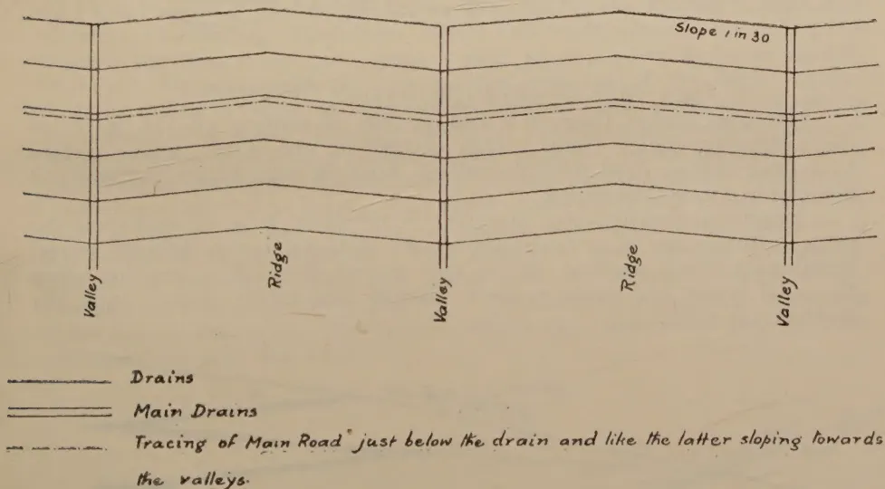
The diagram shows a cross-section of a landscape with alternating ridges and valleys. Drains are shown as lines sloping from the ridges towards the valleys. The main drains are deeper and more frequent. A tracing of the main road is also shown, just below the drain and sloping towards the valleys. The slope is indicated as 1 in 30.
Legend:
Fig 2.—SYSTEMATIC SETTING OUT OF THE DOUBLE FISH-BONE SYSTEM OF DRAINS.
The main outlet drains, if they are steep, will perhaps be deeply furrowed; but it is better to localise the wash there than to have the burden of it over the whole land, and as a result lose by degrees the whole top layer.
By means of small dams of wood, bamboo, or yet more preferably, live cuttings of dadap or such-like plants, and by planting the sides with various grasses, the scouring is overcome to some extent.
74[AUGUST, 1925]Where a sufficient number of valleys does not exist on a long mountain ridge, in order not to make the secondary drains too long (never more than 300-600 feet), main outlet drains should be provided at regular distances. It follows that a kind of double fishbone system, of the nature of the old tapping cuts of rubber trees, is desirable.
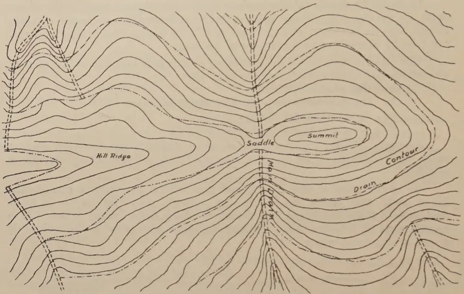
Fig 3.—MAP SHOWING SITUATION OF DRAINS.
On older estates there is a bad system of leading off the water of the valleys by outlet drains. This divides up the water, which, comes by zig-zag drains, right into the valleys, growing into heavy streams and deeply furrowing the drains.
Another system consists in a sort of rhomboid form of roads on the slopes. In the first place the roads become denuded and by degrees, unserviceable for communication, and in the second place these are too steep for outlet drains and cause erosion. Heavy denudation occurs especially on the cross-ways.
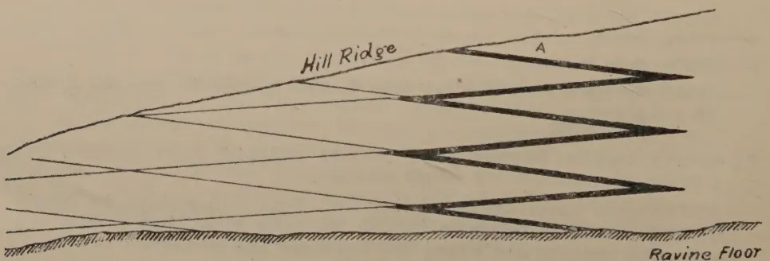
Fig 4.—DRAINS AND ROADS ACCORDING TO RHOMBOID SYSTEM.
(Wrong System)
The thick lines show the long Zig-zag course water has to flow from A
AUGUST, 1925.]75As has been already remarked regarding roads, the road system should be held strictly separate from the outlet drain system.
Yet another system that I have seen on paper, but not in practice, is the making of main outlet drains with a gradient of 1 in 25 to 1 in 40 sloping towards the ravines, and of steep secondary outlet drains. This system seems to me to be absolutely wrong, for according to it, all over in the gardens, steep drains that are difficult to maintain are brought into existence, while in the main outlet drain, on account of the low velocity of flow, a great volume of water accumulates. If such a main outlet drain gives way, then the damage can be very considerable.
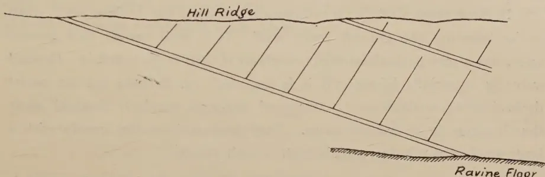
Fig 5.—MAIN DRAINS WITH SLIGHT SLOPE WITH SMALL STEEP FEEDING DRAINS.
(Wrong System)
The main outlet drains in the valleys cannot break through, since they always follow the lowest portion of the land.
The breaking of smaller drains can also cause damage. They must therefore be regularly kept clean. Since very heavy showers fall only a few times in the year, it is a good system, after each abnormally heavy shower, to set all the permanent workers on the cleaning of the outlet drains. Keeping drains in repair is very much easier if both sides of the drains are planted with grass. Planting the lower edge prevents breaking through and planting the upper edge prevents sand accumulating too quickly and the crumbling of the sides. Exceptionally suitable for this is the "Veti-vert" (Andropogon muricalus Retz). This grass grows easily and forms not only a thick hedge, but has, besides, an enormously wide-spread root-system that holds the ground together. This network of roots spreads underneath the floor of the outlet drain and forms with the ground a tough whole. Thereby the drains are well protected. The roots also prevent the crumbling of the ground during the dry season, which the planters of British-India appropriately call "dry wash."
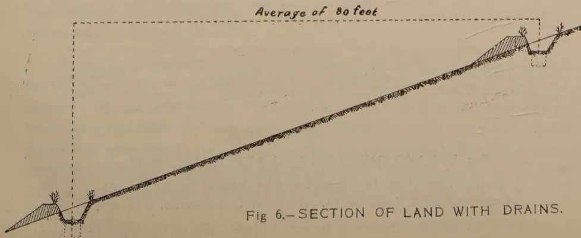
Fig 6.—SECTION OF LAND WITH DRAINS.
76[AUGUST, 1925.Other plants may be used but none have the wide-spread root-system of "Veti-vert," which is also suitable for planting on steep sides of roads. It seldom if ever produces seed, and never spreads in the tea garden.
In very flat lands, such as occur in the lower tracts, water outlet is often very difficult because the land allows too small a slope in the drains and therefore the slope has to be obtained by making the drains deeper down-stream. These should also be carefully set out with a level.
In these cases, draining is not required so much for dealing with wash as for lowering the ground water level. It is well known that ground water has a very prejudicial effect on plants if their roots reach it. Ground water is especially injurious if it is stagnant, i.e. if there are no outlet drains in the neighbourhood. If ground water is regularly drained away then it seems to be less injurious. Very deep main outlet canals with a large number of tributary canals exist in such tracts.
One of the most useful inventions for mountain cultivation is certainly the system of catch-pits. Their advantages for improving the soil will not be discussed here, but rather their value in counteracting wash.
In the first place, a catch-pit holds a certain quantity of water during a heavy shower of rain, so that water has time, to permeate the ground, and, in the second place, the pit catches up the soil that is washed away, which can be restored to the ground when the pit is deepened.
It is important to make the catch-pits at least 18 inches deep. The breadth is generally only one mammoth stroke, but it is better, if there be room for it, to make the pits two or three mammoth strokes wide.
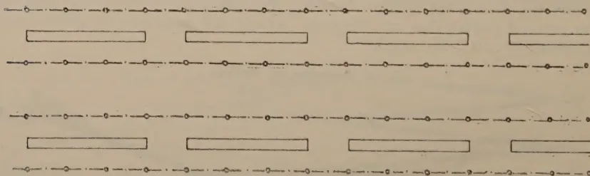
Fig 7.—LONG CATCH-PITS IN ALTERNATE ROWS.
Pits.—6 inches long, 16 inches deep, 9 feet long, about 465 per acre.
Contents.—2,760 Cubic feet per acre. equal to a shower of 0.75 Inch.
Such deep and wide pits are, however (especially in hard ground), very
AUGUST, 1925.]77costly, hence their construction is often put off too long, and people are generally satisfied with shallow catch-pits, of one mammoth stroke's breadth.
As has already been said, one cannot allow the soil to absorb too much water if there is a hard impervious layer under the top layer. In such cases it is better to omit catch-pits.
It is best to make catch-pits not longer than, say, 10 feet since the plant rows do not always run horizontal. A pit that is not horizontal overflows at the lower edge and causes wash there.
Fig 8.—LONG CATCH-PITS—ALTERNATE SYSTEM.
Pits.—About 605 per acre.
Contents.—3,630 Cubic feet per acre, equal to a shower of 1 inch.
On older estates short pits of 3-6 feet are made in each row at equidistant intervals, but alternating in the rows.
At present, longer pits are made, of 10-15 feet in length in alternate rows with but very small intervening spaces. If the terraces, however, are not absolutely horizontal, the terrace that has no pits may be converted into a flowing aqueduct.
On the advantages of the making of terraces opinion is fairly divided. Much depends on the nature of the land and on the rainfall. If terraces and catch-pits be made, then the ground is made to absorb much more water than it normally would do.
It is advisable to examine whether this large quantity of water is good for the growth of the cultivated plants and will not lead to lack of air in the ground. Water must be allowed to drain away. Where the land slopes gently and the rains are not heavy, catch-pits alone, or in combination with horizontal hedges of, say, Leguminosæ, are quite sufficient, if the ground be porous and can therefore absorb much rain. A good system is one row with long catch-pits and the other with a hedge of Leguminosæ.
On steeper lands terraces and catch-pits are undoubtedly of great use.
78
[AUGUST, 1925.
The diagram illustrates a plan view of a hillside with contour lines. A vertical main line, labeled 'Vertical Main Line (Contour)', runs along the center of the slope. Two 'Main contour line.' labels are positioned above the contour lines. The slope is divided into terraces by horizontal lines. Distances between rows of plants are indicated: 4' between the main contour lines and 2' between the terrace lines. A note at the bottom left states '12-40 feet depending on the steepness of the slope.' Points A, B, C, D, and E are marked along the contour lines to show the sequence of planting rows.
Fig 9.—PLAN OF A METHOD FOR TERRACING OR CONTOUR PLANTING.
Distances Between rows of plants are set out from A to B, from C to D and from C to E — Not from A to C.
There are two kinds of terraces, namely the individual terraces wherein around each tree a nearly square, flat surface is made, and long terraces which follow contours of the land.
The first kind is fit for crops with wide planting distances, such as rubber, coffee, etc., the second kind for narrow planting distances, for tea, cacao, etc.
In order to work well, the long terraces must be set out very carefully and therefore the alignments should not lie too far from each other.
![Diagram illustrating the process of protecting fertile top soil by means of terraces. The diagram shows a cross-section of a slope with terraces being built. The slope is labeled 'Slope of Land'. The top layer is 'Black earth' and the bottom layer is 'Red earth'. The diagram shows the sequence of operations: 1. Land that has been tilled but not yet terraced. 2. Black earth from the plant drain is strewn above. 3. Red sub-soil from the plant drain is strewn below. 4. Black earth above the drain is scraped into the next plant drain. 5. Red earth is spread above. 6. Terraces are made with red earths. The diagram also shows the distance between plant lines as 4 feet.](bdfcbe7e4ca0c9dae40947ceff09f02f_6_img.webp)
The diagram illustrates the process of protecting fertile top soil by means of terraces. It shows a cross-section of a slope with terraces being built. The slope is labeled "Slope of Land". The top layer is "Black earth" and the bottom layer is "Red earth". The diagram shows the sequence of operations:
The diagram also shows the distance between plant lines as 4 feet.
Fig 10.—PROTECTING THE FERTILE TOP SOIL BY MEANS OF TERRACES.
This levelling is done with the road-tracer. The setting out of these lines is certainly not easy. It is best to set out at first arbitrarily, at not too distant intervals, a number of horizontal main lines in order to obtain thereby a survey of the lie of the land, and then draw lines perpendicular to these. On these then the common distances of the rows are set out, and from that again the horizontal plant-lines, and on these the common distance of the plants themselves.
80[AUGUST, 1925]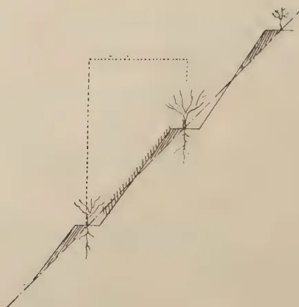
A cross-sectional diagram of a steep hillside. The slope is divided into several terraces by horizontal lines. Small trees are planted on the terraces. A dashed rectangular box is drawn around the middle section of the slope, indicating the area where catch-pits are not feasible.Fig. 11.—TERRACES ON VERY STEEP LAND
Here catch-pits are impracticable.
One of the greatest objections urged against terracing is that the young plants are planted out in the less fertile sub-soil, as these are planted somewhat behind on the terrace.
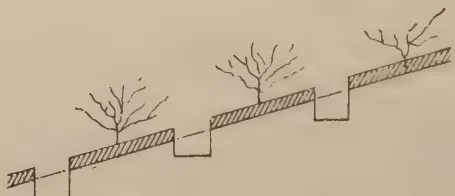
A cross-sectional diagram of a hillside showing a series of wide, rectangular catch-pits. The catch-pits are deep and wide, with the soil in the pits being shaded to represent fertile top-soil. Small trees are planted on the slope between the catch-pits.Fig. 12.—WIDE CATCH-PITS WITHOUT TERRACES.
This is, however, easily prevented by, for example, digging long deep trenches along the lines of planting, and filling these trenches with fertile top-soil, which is thereby also preserved from wash. Also, the ground can be tilled so deep that loose fine soil is secured even at the back of the terrace.
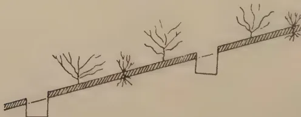
A cross-sectional diagram of a hillside showing a series of wide, rectangular catch-pits. The catch-pits are deep and wide, with the soil in the pits being shaded to represent fertile top-soil. Small trees are planted in the rows between the catch-pits.Fig. 13.—WIDE CATCH-PITS IN ALTERNATE ROWS.
Interplanted with hedges of Leguminosae.
Heer E. van Laump's method on Montaja has been to dig pits 3 feet deep and 3 feet wide with dividing walls also 3 feet broad. After these pits have been exposed some days to the air, they are closed up with the earth of the dividing walls, which therefore turn into pits. Later, these too are closed up, and so, the whole ground is cultivated to the depth of 3 feet.
The objection against the Montaja method is its enormous expense. With the present scarcity of coolies it will hardly ever be possible to have sufficient labour for extensive opening out according to this system.
AUGUST, 1925.]81Another objection is that in an infertile sub-soil the plantation is thrown back a couple of years.
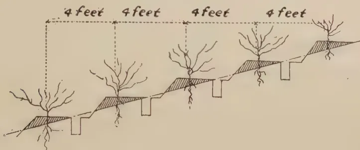
A cross-sectional diagram showing a slope with four trees planted in rows. The trees are spaced 4 feet apart, as indicated by dashed lines and the label "4 feet" above the slope. The ground is terraced, with each terrace level being 4 feet wide. Small rectangular catch-pits are dug into the terraces, with the soil from these pits being spread back onto the terraces.Fig 14.—TERRACES AND CATCH-PITS ON MODERATELY SLOPING LAND.
For the rejuvenation of long cultivated soils it is certainly a good system, but it is a question whether it is also profitable and whether the little humus which remains may not be dissipated. Experiments have shown that this system cannot always be recommended in every case and that on loose sandy soils it may give bad results.
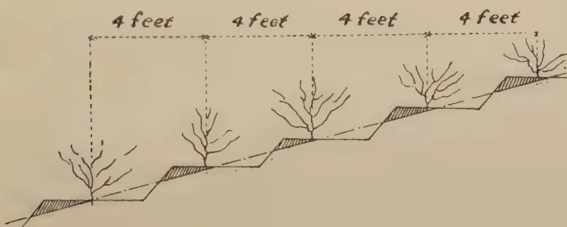
A cross-sectional diagram showing a slope with four trees planted in rows. The trees are spaced 4 feet apart, as indicated by dashed lines and the label "4 feet" above the slope. The ground is terraced, with each terrace level being 4 feet wide. No catch-pits are shown in this diagram.Fig. 15.—TERRACES ALONE.
Terraces can be formed by laying down weeds in lines between the rows. The earth that is washed away is held up by the weeds and so, by degrees, self-formed terraces are made. If the catch-pits are dug later, and the earth from them is spread above the weeds, this formation is accelerated.
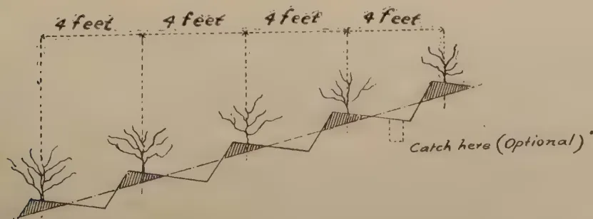
A cross-sectional diagram showing a slope with four trees planted in rows. The trees are spaced 4 feet apart, as indicated by dashed lines and the label "4 feet" above the slope. The ground is terraced, with each terrace level being 4 feet wide. The terraces slope backward. A small rectangular catch-pit is shown being dug into one of the terraces, with the label "Catch here (Optional)" pointing to it.Fig. 16.—TERRACES SLOPING BACKWARD.
With or without Catch-pits.
In the narrow space allowed at present between the rows of tea plants there is hardly room for both terraces and pits. With a spacing of less than 4 ft. there should be either pits alone or terraces alone. Some planters make covered terraces on steep slopes, without catch-pits, while on more even land they make catch-pits without terraces. Where stones occur, these are arranged to make parapets or the sides of terraces
We come now to a very important question, namely, cover planting of steep sides of terraces.
This can hardly be done if the gardens are cleared of all weeds, for, in digging them up, the cover plants will also be destroyed every time.
For cover planting many kinds of plants are used but it is recommended that preference be given to such Leguminosæ as indigofera, tephrosia, clitoria, etc., since these bring nitrogen to the soil at the same time.
As a rule on many kinds of soil, especially clayey and stiff soils, the planting of Leguminosæ immediately after clearing, is recommended. On this subject reference can be made to the special paper by Dr. Bernard on Green Manures.
Clitoria makes a specially strong hedge which, however, must often be cut. The stems that are cut should be laid behind the trunks so as to form with it a close hedge.
A system that has been successfully used is to let the usual weeds (consisting of hundreds of different kinds) remain on steep terrace sides, but regularly to cut them short. In this process, the grasses are got rid of. Grasses appear to cause a poisoning of the soil and should not be tolerated in the neighbourhood of cultivated plants,
A very great factor in the determining of a system of cover planting is the labour question. Planters should ask themselves: "Can I keep the cover plants regularly cut short?" Where there is no regular labour supply, covered terraces may cause very much trouble by the gardens becoming "dirty."
The even portions of the terraces must naturally be kept as clean as possible and tilled a few times a year. For nursery beds terraces are surrounded by small drains in order to protect the seeds or small plants from being washed away. These drains and all beds may be given a slope of, say, 1 in 30 or, in 40, and the small drains then allowed to discharge their water into main drains.
This would not be such a bad system for the gardens themselves if one could at least be certain of being able to have the little drains regularly kept open by cutting down the weeds on their sides and emptying them of the earth that has been washed into it.
AUGUST, 1925.]83Fertile soil can be brought to the gardens from the unplanted valleys and scattered there. This has often given incredibly good results, but it is enormously expensive. In British India this top-dressing of old gardens is practised.
Finally it should be remarked that even the best system of the lay-out of gardens cannot counteract wash if the outlet drains are not regularly deepened and the terraces not regularly repaired. Special attention has to be paid to repair after heavy downpours.
In the upkeep of tea gardens in maturity, the measures adopted when opening out are repeated, viz., tilling in order to make the soil loose again, mending of the roads, ditches, terraces and outlet drains, and especially weeding, which is done in various ways.
Generally weeding is done at intervals of to 2 months, according to the rapidity of the growth of the weeds. Most planters in Java are not supporters of clean weeding as this aids wash. It should be recommended only on land where the growth of weeds is so vigorous that the development of the plants of the main crop are hindered by them, and where the control of injurious weeds, especially illuk, is too difficult. Clean weeding is the best method to be recommended where illuk exists.
The system of weeding that gives good results, especially on loose forest ground rich in humus, is selective weeding, whereby all bad weeds are eliminated and the good ones retained. This system is more difficult, and requires specially strict control, but it is better than clean weeding because, from the good weeds that are retained, a return is made to the humus of the soil, and at the same time the prejudicial influence of grasses which have always to be done away with is eliminated. Besides, in the so-called "dirty" gardens, the good weeds give the advantage of shade to the ground.
After pruning (generally about every —2 years) tilling takes place; it is then easy to till the tea rows. The ground is dug up as deep as possible with the "mammoty" (generally with the "mammoty fork"), the ditches are emptied or deepened, terraces and drains are put in order, manures are used as required, gaps are interplanted and Leguminosæ are planted as desired. In short all measures for aerating the ground are applied, whereby water easily percolates into the lower layer of the ground, and metabolism takes place freely, so that new quantities of food stores are made available to the plants.
All the working methods spoken of above are very expensive; if however they are applied with care, gardens will be found satisfactory and their increased yields will cover the expenses incurred. Besides, with intensive preparation, the maintenance of gardens, as has already been stated, is rendered easier, and the cost of upkeep is lowered.
84[AUGUST, 1925.Dr. A. R. W. KERKHOVEN.*
People who have never seen the serious consequences of a lack of proper measures against wash in old tea gardens, cannot imagine what proportions they may assume.
Water that will not flow over the surface is :
1. That which is naturally absorbed by the soil. This is a very variable amount, varying with the nature of the soil.
In the Pengalengan district, for instance, where the soil is spongy and very porous to a great depth, a shower of, say, 40 to 60 m.m. will be easily absorbed in a very short time.
When the rain has been falling every day for a long period the less porous soils get soaked to such an extent, that they cannot absorb any more water. Only in the very porous soils can the absorption and percolation be depended upon to prevent the water from flowing over the surface.
It is not wise to let the soil absorb too much water. This point will be considered later on.
2. That which is retained by "water-holes" or "catch pits." In the less porous soils the "water-holes" remain full of water sometimes for a day or longer.
Consequently the capacity of these "water-holes" should not be depended upon.
Moreover, the abnormally heavy showers are not always polite enough to wait until the Manager has dug his "water-holes" to the prescribed depth !
The calculated water-capacity of the holes should therefore be divided by two at least.
If we take, say, a system of water-holes of 0.15 M. (6") broad, 0.40 M. (16") deep and 2.70 M. (8' 10") long, with 0.90 M. (3') between the holes, these being made between alternate rows of tea bushes planted in rows of 1.20 M. (approximately 4') apart, we come to 1150 holes per Hectare and 0.162 cubic Metre per hole.
The combined capacity of all the holes per Hectare is 186 cubic Metres which corresponds with the amount of water that a shower of only 19 m.m. would deposit on the soil.
It is clear that this amount is unimportant, especially if we can count on one-half of it only say 10 m.m.
3. Evaporation. This factor may be neglected during the short duration of a heavy shower.
Summa summarum we can subtract very little in calculating the amount which probably will flow over the surface.
This however is all theory. In practice we see how much soil is yearly carried away when we observe the roots of tea bushes showing above the level of the ground.
In fact the wash will become worse every year, if no preventive measures are taken, the lower strata of the soil being less and less porous.
The amount of earth carried away by tropical rivers is the five or tenfold of the corresponding amount in European rivers.
The wash is not only caused by the heavier showers but also by the clayey nature of many soils. The clay is "churned" by the heavy rain drops and is easily carried away. When the soil is covered with grass, weeds or Leguminosæ this "churning" is prevented.
* Lecture delivered in Dutch before the Tea Congress.
AUGUST, 1925.]85This is the reason why creeping, soil-covering Leguminosæ are so useful in preventing wash.
To a certain extent the leaves of trees also prevent the "churning action" by breaking the force of the falling raindrops, but the drip usually increases it.
The various measures against wash with regard to their importance may be classified as follows :
I. Contour-drains.
II. Planting the tea in horizontal rows, with or without horizontal terraces.
III. "Water-holes" or "catch pits."
IV. Horizontal hedges of some sort: preferably Leguminosæ, or ground covering Leguminosæ.
V. Regular upkeep.
Of course all these measures against wash are much more important where the land is steep.
In very flat land the wash is generally not serious, but in some cases this may be quite different. For instance, in some of the very flat tea districts of Sumatra (Siantar) the wash is extraordinarily difficult to prevent, although the soil has rather a sandy than a porous appearance.
Let us consider what can be done in future to prevent wash when opening up a new estate.
Initial mistakes and deficiencies are as a rule very difficult to correct, if at all, and will entail considerably additional expense.
It is therefore an absolute necessity to work on a pre-determined and systematic plan from the very beginning.
After the land has been cleared and hoed once, one should immediately commence to lay out a system of roads, not only of cart-roads, but also of garden roads.
Time prevents me from enlarging upon this very interesting subject, which I have treated fully on former occasions. I shall treat the subject only in its connection with the prevention of wash. The following rules should be observed :
1. Roads should not be supposed to act as drains, because the water will soon render them useless.
Every road of course will receive a certain amount of water, but this should be carried off as quickly as possible.
2. Thus, if possible, a contour drain should be made just above the road, in order to protect it against too much water.
3. The so-called horizontal roads should not be made absolutely horizontal but sloping gently towards the valleys or "main-drains." If the slope is only below 1 in 40 very little damage to the road gutters is to be feared.
The reason, that the roads should be laid out first of all is, that the contour drains should be made in such a way, that they do not carry water to the roads. Where a contour drain crosses a road special measures should be taken. If possible, however, these crossings should be avoided.
86[AUGUST, 1925.Contour drains. I have always advocated the use of contour drains on the fish-bone system, which will be explained further on.
The action of these contour drains is very often only imperfectly understood.
The principal idea is that they should carry off the surplus water which flows over the ground during the heavy showers, and that they should carry this water to the nearest valley or "main drain." But they have a very important secondary action: they also carry off the under-ground water and therefore more or less prevent the flow over the surface.
If the showers are not too heavy it may be observed (if the drains are deep enough) that they begin to carry water very soon after the commencement of the shower and that this water is clear, i.e., does not carry away any earth.
If the drains are close enough to each other, they carry away so much of this under-ground water that only a very heavy shower will cause a loss of earth by flowing over the surface.
The deeper the drains, the stronger the action. Consequently, do not make shallow drains, even if they are close together.
The walls of the drains should, of course, be planted with creeping Leguminosae, harmless weeds (for instance Hydrocotyle) or grass of some sort which does not spread too easily.
Andropogon muricatus Retz, which we call "djoekoet wangi" is sometimes used; it has a very large number of roots, which keep the particles of earth together.
In making drains on the fish bone system it should be kept in mind:
(a.) that it is wrong to make the contour drains too long because the lower part will carry too much water and will overflow, causing considerable damage.
In order to make the drains as short as possible, they should slope towards the valleys, or towards the lower parts of the "folds" in the land, where the "main-drains" should be made.
(b.) The slope of the contour-drains depends upon the nature of the soil. Never give the drains a steeper slope than 1 in 25, as otherwise the velocity of the water becomes too great and the drain will be washed out.
If the slope is less than 1 in 40 or 1 in 60 (depending upon the soils,) the velocity of the stream will be too small, deposits of earth, leaves, etc., will result, clogging the drain and causing overflows.
In heavy, clayey soils 1 in 25 is advisable; in loose porous soils 1 in 40 and in very loose soils 1 in 60.
To prevent earthing up, deep "catch-holes" may be made in the drain at frequent intervals; these should be dug out frequently.
The earth from these holes may be spread out in the gardens.
(c.) The valleys are the natural drains and therefore the "main-drains" should be made in the valleys.
Some people object that valleys, as a rule, have the most fertile soil; this is true, but they should be drained, fertile soil when water-logged being useless for tea.
AUGUST, 1925.]87Water tends towards the valleys and if deep drains are made in the valleys there is no danger of a "break-through."
Consequently it is wrong to make the "main-drains" on the ridges.
The "main-drains" are usually rather steep, objections being sometimes raised that they are soon washed out and cause small landslides. This is true to a certain extent, but it is better to localise the "wash-outs" than to have them all over the garden (if no drains are made) and thus lose the fertile upper part of the soil.
The sides and bottom of the main-drains should be kept covered with grass and if this alone cannot prevent the drains getting too deep, small dams of wood or bamboo, or better still, living branches of "dadap" (Erythrina liliosperma Miq.), "kirinjoeh" (Eupatorium pallescens D. C.), "handeuleum" (Graptophyllum hortense Nees) etc., can be made. Sometimes a stone-dressing may be used to advantage.
Where no sufficient number of natural valleys or "folds" are available it is necessary to make the main-drains at distances of not more than 100 to 200 yards apart.
This is the "herring-bone" system, which I have used in all my younger gardens and which has given complete satisfaction.
Lack of time forces me to omit a description of other systems, which although very interesting, are in my opinion less effective.
Water-holes. I have already mentioned their capacity. The advantages of the water-holes, which are used extensively in Java, are as follows:—
(1) They collect a certain amount of rain-water, which will slowly percolate into the soil and therefore effectively prevent wash if the showers are not too heavy and if the holes are dug out at frequent intervals. In doing this, the earth should be spread above the hole, not below. Thus the earth is returned to the place it came from and there is no loss.
(2) When making the holes a certain amount of earth from the lower strata is brought up and after sufficient weathering supplies reserve food.
(3) The lower strata are brought into contact with the atmosphere and the soil is better aerated.
I do not approve of the system of filling the holes with prunings and digging new holes every time the garden is pruned, because then too much damage is done to the roots.
Water-holes should be made between every 2 rows of tea, not between 3 or 4 rows. They should not be too long, as otherwise the water will accumulate in the lower part and overflow, if they are not absolutely horizontal.
In extremely stiff soils very deep and broad holes are useful, but they are very difficult to make and expensive. As they effectively prevent wash, they are not so soon filled with earth as the smaller holes and therefore the upkeep is relatively cheap.
The improved aeration certainly increases the yield of tea gardens on very stiff soils.
Formerly the water-holes were made short and in each row, but "staggered." This is a good system for obvious reasons, but it is rather
88[AUGUST, 1925.troublesome during plucking and it does not allow us to plant continuous hedges of Leguminosae.
In order to make the use of water-holes possible, the rows of tea should not be too close together.
Too close planting is in any case a grave blunder as every individual tea plant has insufficient room above and under the soil to develop properly and to obtain the necessary plant food, air, and sunshine.
Wider planting is also necessary if we wish to make use of terraces and hedges of Leguminosae.
The hedges of Leguminosae should be planted in the rows where no water-holes occur. Leucaena glauca, if frequently pruned fairly low, makes splendid hedges. The prunings should be laid behind the hedges, in order to catch the earth.
This is not the place to enlarge upon the advantages of Leguminosae in tea gardens. It is sufficient to say that they improve the structure of the soil in many ways and therefore make it more porous, thereby preventing wash very effectively.
Terraces. The opinions of planters on the adequacy of terraces are much divided.
My opinion is that terraces are very useful on gently sloping land, but not absolutely necessary. The sides should be kept covered with good weeds or creeping Leguminosae like Vigna oligosperma; hedges of Leguminosae like Leucaena glauca may be planted on the edges of the terraces.
They may be used in conjunction with contour-drains and water-holes, but in any case they should be made perfectly horizontal.
Sloping terraces are worse than useless, as they carry water and increase wash.
In very steep places contour-drains and water-holes are useless, and horizontal terraces with properly protected slopes are the only practical solution of the problem.
When opening up new gardens on very steep soil it is a good system to dig fairly deep horizontal trenches and fill them with good fertile upper soil, in which the young tea plants are sure to thrive.
The best system for keeping the slopes in repair is to plant them with some sort of creeping Leguminosae; Vigna oligosperma is very good and it improves the soil wonderfully.
Vigna, however, requires a fine loose soil and sometimes it has to be aided with a little ashes or manure to make it grow.
Green manuring will be treated so exhaustively at this Congress, that it is not necessary to say more about it here.
I only wish to state here, that the extensive use of green manuring always diminishes the wash, the ground covering Leguminosae retaining a large amount of water or preventing too much percolation thus also preventing the "washing-out" of the soil, which, in some cases, is even worse than the surface-wash.
The water percolating to the deeper strata carries away a lot of easily soluble plant food, of which only a small part comes back through the capillary action of the soil during the dry monsoon.
AUGUST, 1925.]89Therefore do not force the soil to absorb too much water by depending on water holes only.
Let the surplus water flow away as much as possible, but prevent it doing damage by the means described above.
"Clean weeding" in the past has been the principal cause of wash. Its disadvantages have been stated so often that I hope that now it is a thing of the past!
Economization of the expenses for the upkeep of the various measures against wash leads to a rapid loss of soil capital!
In choosing a preventive system of means against wash, the labour question is very important; time however does not permit this problem to be treated here.—Proceedings of the Tea Congress, Bandoeng, 1924.
T. H. HOLLAND, M.S.E.A.C.,
Manager, Experiment Station, Peradeniya.
There are two areas available, each capable of sub-division into a maximum of 6 plots 15 feet wide by 96 feet long, the length running down the slope. Both areas are planted in tea. In view of the fact that the slope in one area is steeper than in the other it is considered that the one set of 6 plots could not be used as duplicates of the other set. The proposal is therefore to duplicate two methods of treatment in one area and another two methods in the other area. The following treatments are proposed :—
| Plot | 1. | Continuous cover of Indigofera endecaphylla. |
| " | 2. | Control. |
| " | 3. | Thick contour hedges of Clitoria cajanifolia; about 4 feet between hedges; the tea bushes to be utilised to form part of these hedges where possible. |
| " | 4. | Duplicate of 1 |
| " | 5. | " " 2 |
| " | 6. | " " 3 |
In this area the tops of the plots will coincide with the edge of a path. This path has a good drain on the upper side and no further precautions would be required to prevent entrance of wash from above the plots.
| Plot | 1. | Envelope forking up every line once a year. |
| " | 2. | Control. |
| " | 3. | Silt pits in drains. |
| " | 4. | Duplicate of 1 |
| " | 5. | " " 2 |
| " | 6. | " " 3 |
In this area a low wall at the top of the plots will be required, to keep wash from above entering the plots.
It is proposed to have contour drains in each plot, including the control plot. Area A would have five drains in each plot 20 ft. apart, the top drain to be 8 ft. from the top of the plot at its highest end and the bottom drain 8 ft. above the catch pits. These distances cannot be rigidly adhered to as it will be necessary to avoid existing tea bushes and Gliricidia trees.
90[AUGUST, 1925.Area B would have four drains 27 ft. apart, the top drain 7'6 in. from the top of the plot and the bottom drain 7'6 in. from the catch pit. Each drain would be led into a paved and cemented down drain leading into the catch pit at the bottom of the plot. The paving of the down drains will avoid the complication of erosion in the down drains themselves. With regard to the silt pits, it is proposed to locate these in the drains, as this is believed to be easiest and most commonly adopted method of using silt pits in tea. In drains only 15 ft. long however their arrangement is somewhat difficult. It is proposed to have only one silt pit 3 ft. long by 1 ft. deep in each drain at the lower end of the drain. If a second pit were inserted in such a short length of drain there would be no normal flow of water in the drain before the pit was reached. All the drains would be cleaned out periodically in the normal manner, and the silt pits should be cleaned out if possible before they overflow, otherwise their full value cannot be gauged. Clean weeding would be practised throughout, except in the Indigofera plot where hand weeding would be employed till a thick cover was established.
The existing shade trees (Gliricida maculata) would be left standing in all plots.
It is proposed to isolate each plot by a low wall on the edge of the down drain. The other edge of the down drain is also to be provided with a low wall to prevent direct entrance of water and silt at places other than the entrance of the drains. The plan of a plot in area A will therefore be as follows:—
If the low walls at the side of the down drains are one brick wide (4 in.) the actual remaining width of a plot will only be 13 ft.
It is proposed to occupy the remainder of 1925 with experimenting as to the necessary size of the catch pits and the best methods of measuring results; filling in the old drains and digging the new drains; building the catch pits, down drains and dividing walls. During 1926 the wash from each plot would be measured and yields recorded in its then existing condition; that is with the new drains dug, but no other treatment applied to the plots (the condition of the future control plots). In 1927 the treatments would be applied and wash and yields recorded both during the establishment of the new conditions and after.
AUGUST, 1925.]91N. M. MACGREGOR, D.Sc., B.Sc.,
Advisory Officer, Indian Tea Association.
Although a certain amount of information regarding the requirements of a soil may be obtained by studying the mechanical and chemical analysis, such information is necessarily very limited chiefly because chemical methods do not measure with any accuracy the food which is available to the plant. Chemical analyses can only be translated in the light of practical experiments but here again little reliable information is to be had with regard to tea.
It is for instance known that an application of nitrogen in a tea soil will in most instances produce an increase in crop, but the optimum quantity to apply and the best form in which to apply it will depend on the nature of the soil and can only be found by experiment.
With regard to the other two important plant foods, potash and phosphoric acid, very little knowledge indeed has been obtained by direct experiment on tea soils.
In selecting a block of tea for experiment, we have first to choose plants in such a state that great variation in yield due to factors other than manuring may not be expected. For example, with either immature young tea, or with tea recently cut back, the yield increases so quickly that the small increase due to manuring is relatively small and difficult to detect. In any case mature tea is the better subject for experiment since it occupies the greatest portion of the area of most gardens, and one cannot be certain that results obtained on young tea would be true also for old tea.
With single plot experiments there is always the possibility that an increase or decrease in yield may be due to some agency other than the fertilizer applied and unless the experiment is repeated two or three times there is no indication as to the accuracy of the result.
The experiments quoted below have only been in progress for two years and it cannot be expected that a great deal of information will have been acquired. For this reason it is proposed to treat the subject rather from the point of view of the interpretation of results than from the results themselves.
In every case the trials are repeated in triplicate and the plots, th of an acre in area, are 6 bushes wide. This is a convenient size of plot as it can if necessary be plucked by one woman in a morning. The shape is convenient as the whole set of plots can be arranged parallel and near to a road whilst patches of bad soils are less likely to interfere and make one plot vary greatly from another than would be the case if square plots were used.
In 1922 the plots were staked out and the leaf weighed every seven days to ascertain the initial fertility, that is, the initial differences existing between the plots being individually manured.
92[AUGUST, 1925.In experiments with annual crops it has not been found that small differences in soil fertility previous to a manurial experiment have much effect on the result of the trial, because the germination of a seed is so entirely dependent upon the soil and weather conditions prevailing at the time of sowing. An area of soil which shows a poor fertility in a year of heavy rainfall may in the following year possess average fertility by reason of a smaller or better distributed rainfall.
In the case of a tea bush the combined effect of many successive years masks the climatic variations from year to year and the resulting bush is, in comparison with its neighbours, a fair indication of the fertility of the soil on which it grows.
The ideal piece of tea for experimental purposes would be an area which could be divided up into the required number of plots all giving equal yields. In practice this is never possible, and in spite of every care and consideration having been taken in choosing the areas now under experiment so that shade trees, drains, slopes and the general health of the bushes were as uniform as possible, it was disappointing to find that a variation of as much as 20 per cent, frequently existed in the mean yields of the plot-sets. The term plot-set is used to denote those three plots which receive the same manurial treatment. A difference as great as 20 per cent, would, in most cases, entirely mask the results of any manures which might subsequently be added during the first two or three years.
As an example of this the figures of an experiment carried out on ten-year old tea, pruned to two or three inches of new wood each successive year, may be quoted. The initial fertilities as represented by the total year's yield, were as follows:—
| Plot letter | A. | B. | C. | D. | E. | F. |
|---|---|---|---|---|---|---|
| Series 1 | - 174 | 163 | 129 | 127 | 145 | 134 |
| Series 2 | - 120 | 116 | 157 | 166 | 99 | 129 |
| Series 3 | - 123 | 106 | 93 | 113 | 102 | 90 |
The average for each plot-set is—
139 128 127 135 115 118 (i)
Throughout the experiments detailed below, the A plots have been taken as the check plots. Then for E to show an increase on A, it will be necessary for it to give a comparative increase of more than 24 lb. which is over 20 per cent. on the yield.
In the following year (1923) C, D, E and F were manured with increasing quantities of nitrogen whilst all but the check plot received equal dressings of potash and phosphoric acid. The resulting yields given by these plots were then as follows:—
| Plot letter | A. | B. | C. | D. | E. | F. |
|---|---|---|---|---|---|---|
| Series 1 | - 201 | 193 | 188 | 180 | 227 | 246 |
| Series 2 | - 133 | 150 | 197 | 232 | 152 | 200 |
| Series 3 | - 136 | 141 | 115 | 165 | 165 | 160 |
The average for each plot-set is—
157 161 167 192 181 202 (ii)
AUGUST, 1925.]93It happens in this case that the increase produced by the nitrogenous manure was so great that it has overcome the initial difference which existed between E and A, nevertheless the crop shown by plot E breaks the steady increase from A to F and the apparent depression at E could not be explained without the initial fertility records.
The initial fertility curve and the curve showing the actual yields after manuring are shown on curve (i) and (ii) respectively in the diagrams.
In order to get a true measure of the effect of manures on these plots it is obvious that consideration must be given to the initial yields. However, the best method of estimating the influence of this yield is not easy to find. It is conceivable that the result of manuring might be an additive one. In that case the following correction to the plot-set E yield might be applied. Thus, in the initial fertility year the check plots A gave an average of 139 lb. whilst the average of the E plots was 115 lb. Here the A plot-set has a start of 24 lb. on the E plot-set and for a true comparison of the yield after manuring this 24 lb. start should be added to the crop given by the E plot-set. Then we say that the corrected yield for the E plot-set is lb.
Similarly if all the plots are corrected the following results are obtained :—
| A. | B. | C. | D. | E. | F. |
|---|---|---|---|---|---|
| 157 | 172 | 179 | 196 | 205 | 223 |
A, being the check, does not change of course. It will be noticed that a steady increase is now shown from A to F as the amount of fertilizer increases. These values are shown on curve (iii) of the diagram.
The difference in the initial yields are in the main due to the size and health of the bushes and only to a small extent to the actual plant food or soil condition maintaining during the experiment. It cannot therefore be expected that a plot on which the bushes are small will give the same numerical increase as one on which all the bushes are large; for, with a small bush, the root development is such that only a small part of the manures added can be assimilated by the plant.
It is more reasonable to expect that the increase from manuring will be proportional to the initial fertilities and that for a given plot with a given manure a definite percentage increase will be obtained and not a purely additional one.
This correction is made by expressing the manured yield of each plot as a percentage of the initial yield. Considering again the E plots we see that in the initial fertility year they gave an average yield of 115 lb. and in the manured year an average of 181 lb. of leaf. The manured yield therefore was 157.4 per cent. of the initial yield.
Similarly for all the plot-sets the percentage increases in the second year were as follows :—
| A. | B. | C. | D. | E. | F. |
|---|---|---|---|---|---|
| 112 | 127 | 132 | 142 | 157 | 172 |
The values show a slightly smoother gradation than when the additive increases were considered. Curve (iv) illustrates these values.
94[AUGUST, 1925.Of curves (iii) and (iv) we must determine which gives the truest interpretation of the experimental result without resorting to the dangerous method of choosing that curve which is most in line with expectations. This may be done by finding out which method gives the lowest percentage probable errors, provided as is here the case that each experiment has been repeated at least three times.
When an experiment is repeated a sufficient number of times the probable error of the mean result () may be found from the formula :—
where is equal to the sum of the squares of the differences of each individual result in a given plot-set from the mean of that plot-set, and is equal to the number of times that the experiment is repeated.
If, however, as in the case considered, the experiment is carried out only in triplicate it is doubtful whether the figure arrived at from the above equation is of any real value as it stands ; but we may find that the average percentage of a plot-set is considerably lower when one method is used for correcting results than another, or, if little or no correlation exists between the initial fertility and the manured yield, then we shall find that the figure is raised and not lowered by any correction.
Thus in the experiment already quoted we get the following result by considering the actual yields given by the check plots in 1923.
The actual yields are 201, 133 and 136 lb. and the mean of these three values is 157. Then—
| Actual yields. | Difference from mean (). | Square of difference (). |
|---|---|---|
| 201 | 44 | 1,936 |
| 133 | 24 | 576 |
| 136 | 21 | 441 |
| Mean=157 | Sum of ()=2,953 | |
In the equation above we may substitute 3 for , then becomes . We are now able to solve the equation and we find that—
Then since the mean of the actual yields was 157 and the probable error of this figure is 14.9, the percentage probable error is 9.5.
Similarly for all the plot-sets the following percentage probable errors are obtained.
| A. | B. | C. | D. | E. | F. | |
|---|---|---|---|---|---|---|
| % | 9.5 | 6.6 | 10.4 | 7.0 | 8.6 | 8.2 |
So that the average percentage for the uncorrected curve is 8.4. This means that any value of the series is liable to be on the average incorrect by 8.4 per cent.
If we consider the values given by the additively corrected yields the probable error of the mean is 2.52 per cent. whilst that of the percentage corrected curves is only 1.73 per cent. These last figures hence are the truest of the three sets.
AUGUST, 1925.]
95
Diagram.
Showing the actual increase in crop return due to manuring and the interpretation of this increase with regard to initial fertility
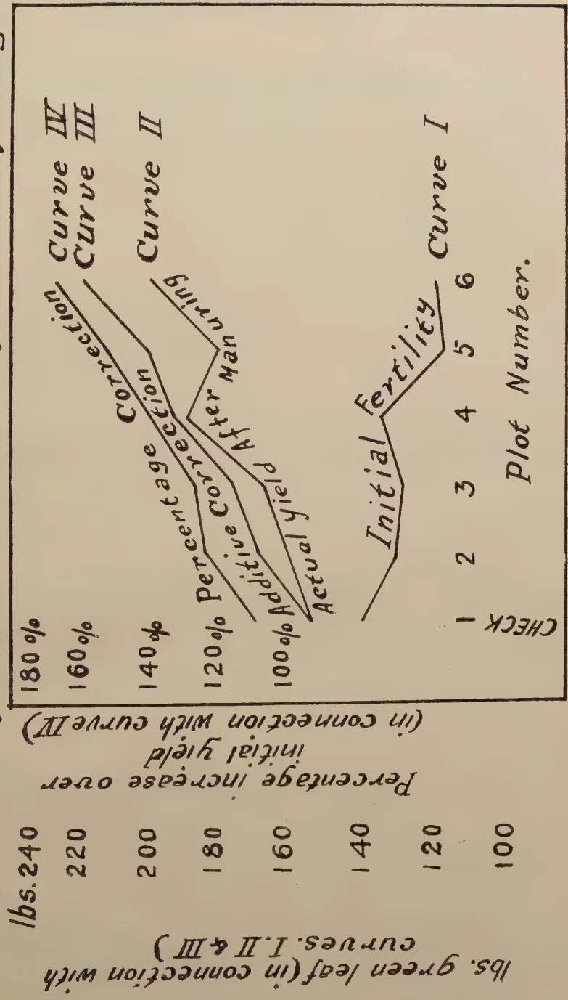
The diagram consists of two main parts. The upper part is a line graph with 'Plot Number' (1 to 6) on the x-axis and 'Percentage increase over initial yield' (100% to 180%) on the y-axis. It shows two lines: 'Actual yield' and 'After manuring'. The 'After manuring' line is consistently above the 'Actual yield' line. Four curves are plotted: Curve I, Curve II, Curve III, and Curve IV, which represent different levels of initial fertility. The lower part of the diagram is a smaller graph with 'lbs. green leaf (in connection with curves I, II & III)' on the y-axis (100 to 240) and 'Percentage increase over initial yield' on the x-axis (100% to 180%). It shows a line labeled 'Initial yield' and a line labeled 'Correction'.
| Plot Number | Actual yield (%) | After manuring (%) |
|---|---|---|
| 1 | 100 | 100 |
| 2 | 105 | 110 |
| 3 | 110 | 115 |
| 4 | 115 | 120 |
| 5 | 120 | 125 |
| 6 | 125 | 130 |
| Percentage increase over initial yield (%) | lbs. green leaf (in connection with curves I, II & III) |
|---|---|
| 100 | 100 |
| 110 | 110 |
| 120 | 120 |
| 130 | 130 |
| 140 | 140 |
| 150 | 150 |
| 160 | 160 |
| 170 | 170 |
| 180 | 180 |
In another experiment conducted on the same lines as the above, the plots were manured with increasing quantities of potash. The results were not in accordance with expectation in that the curve presented a broken appearance and did not show a steady rise or fall with increasing quantities of potash applied as manure.
On examination of the probable errors it was found that the corrected results were less reliable than the uncorrected ones, the reason being that the tea had received a heavy prune at the end of the initial fertility year and the factors influencing the speed with which the bushes came away were not the same as those which caused the initial differences in yield between the various plots. Therefore tea which is under experiment should only be top pruned so that the frame of the bush is preserved as far as is possible.
The point which it is desired to emphasize is that any corrections may be applied which tend to lower the probable error of the experiment provided such corrections hold for the whole experiment.
In both the above experiments the applications of manure were such that a smooth curve might be predicted and we should not be liable to any great error if we choose that curve which appears to be the smoother. But where it is desired to find out in what form a plant food is most beneficial, the form of the curve cannot be anticipated and the result deduced from the yields themselves may be entirely the reverse of those shown by a curve corrected for initial fertilities.
Thus an experiment was made using five different forms of nitrogenous fertilizer, each plot receiving the same amount of Nitrogen, Potash and Phosphate. The Nitrogen being applied as follows:—
| Plot-Set A. | B. | C. | D. | E. | F. |
|---|---|---|---|---|---|
| No nitrogen |
Nitrolim | Ammonium Sulphate |
Oil- cake |
Fish guano |
Animal meal |
The yields from these plot-sets in 1923, the manured year, were:—
lb. of leaf—285 316 300 341 316 298
It is seen that the greatest yield is given by the oilcake plot and the smallest by the animal meal.
When these yields are expressed as percentage of the corresponding initial fertility yields the order of efficiency is entirely changed and the figures obtained are as follows:—
| A. | B. | C. | D. | E. | F. |
|---|---|---|---|---|---|
| 149 % | 156 % | 160 % | 161 % | 161 % | 166 % |
The probable error of the experiment deduced from the yields is 4.73 per cent. whilst that deduced from the percentage figures is only 1.8 per cent. A truer interpretation, therefore, is shown by the corrected curve than by the curve plotted from the yields themselves. Interpreted in this way it appears that animal meal has produced the biggest relative increase, although the animal meal plot is still giving less crop than any other manured plot. The average increase produced by one year's manuring is however only 8 per cent., an increase too small to be accurately measured when three plots only are used for each experiment, so that the actual increase calculated by the above method can only be regarded as approximate.
It is certain however that these figures are a much truer index to the action of the manures than the crop yields themselves uncorrected for initial fertility.—Quarterly Journal of the Scientific Department of the Indian Tea Association, Part IV, 1924.
AUGUST, 1925.]97F. A. STOCKDALE, C.B.E., M.A., F.L.S.,
Director of Agriculture, Ceylon.
These experiments were started in April 1923, upon a block of rubber planted in 1913. The trees available were divided into three groups of 20 trees each. The average girths of the groups were as follows:—Group 1—36.25 inches, Group 2—36 inches, Group 3—36.75 inches. Group 1 was tapped on one-third circumference with a single cut to the left at an angle of starting at its lowest point at a height of 24 inches from the ground. Group 2 was similarly tapped on one half circumference, and Group 3 on circumference. The experiments were designed to test the relative values in yield of rubber from tappings on , , and circumferences.
The tapping has been done by one tapper on alternate days throughout the year (Sundays included), and records for the individual tree yields have been kept. The results in grammes for the 21 months (April 1923 to December 1924) are given in the annexed tables.
From these figures the following facts may be ascertained:—
| grammes | |||
|---|---|---|---|
| 1923 | Half circumference | 24,944 | = 100 |
| 1924 | " " | 42,529 | = 170 |
| 1923 | Third circumference | 19,986 | = 100 |
| 1924 | " " | 33,484 | = 167.5 |
| 1923 | Quarter circumference | 13,129 | = 100 |
| 1924 | " " | 24,765 | = 188.6 |
From these figures it is seen that the relative ratios for the quarters is somewhat in excess of those for the thirds and halves.
| 1923 | : | : | = | 24,944 | : | 19,986 | : | 13,129 | |||
| = | 100 | : | 76.5 | : | 52.7 | ||||||
| 1924 | : | : | = | 42,529 | : | 33,484 | : | 24,765 | |||
| = | 100 | : | 78.7 | : | 58.8 |
These figures show an improvement in the yields secured from the tappings in the year 1924. They also show a marked superiority in the yields of the tappings of the thirds over what would have been expected. An analysis of the individual yields shows that this is due to abnormally high yields from one tree in 1923 and from two trees in 1924. If their yields are eliminated from the averages the ratios stand at 73.1 in 1923 and 68.8 in 1924.
98[AUGUST, 1925]If an examination is made of the frequency of yields, due allowance being given to the units of bark removed, the following figures are obtained :—
| Number of Trees. | ||||||||||
|---|---|---|---|---|---|---|---|---|---|---|
| 1923 | 1924 | |||||||||
| 1 | ||||||||||
| Under | 400 | 532 | 800 | grammes | 4 | 4 | 7 | — | — | 1 |
| Up to | 600 | 798 | 1,200 | „ | 4 | 3 | 4 | 1 | — | 5 |
| 800 | 1,064 | 1,600 | „ | 5 | 6 | 2 | 6 | 4 | 2 | |
| 1,000 | 1,333 | 2,000 | „ | 4 | 3 | 4 | 2 | 5 | 3 | |
| 1,200 | 1,596 | 2,400 | „ | 3 | 2 | 2 | 2 | 3 | 2 | |
| 1,400 | 1,862 | 2,800 | „ | — | 1 | 1 | 1 | 1 | 1 | |
| 1,600 | 2,128 | 3,200 | „ | — | — | — | 1 | 3 | 1 | |
| 1,800 | 2,394 | 3,600 | „ | — | — | — | 3 | 1 | 2 | |
| 2,000 | 2,666 | 4,000 | „ | — | — | — | 2 | 1 | 3 | |
| 2,200 | 2,926 | 4,400 | „ | — | 1 | — | 1 | — | — | |
| above | 2,400 | 3,132 | 4,800 | „ | — | — | — | 1 | 2 | — |
These figures show that the group being tapped on has the largest percentage of low yielders while the group being tapped on rd has two outstanding yielders. The group tapped on was more uniform in individual yields than the other two groups in 1923, but in 1924, the range of individual yields in this group widened considerably and this accounts for the relative increase in yield in favour of this group. Similarly, the relatively high yields in the group tapped on the thirds is due to the yields from two high yielders.
The percentage of scrap on total rubber is shown in the following table :—
| 1923 | 1924 | |
|---|---|---|
| Quarters | 10.1% | 11.3% |
| Thirds | 10.0% | 9.5% |
| Halves | 14.2% | 14.5% |
Although these percentages are fairly constant, an examination of the individual yields show that, whereas some trees give very low percentages of scrap, others give a very high percentage.
It would be unsafe to draw any definite conclusions from an experiment conducted for a limited period with a small number of trees in single groups showing markedly different individual yields. The group tapped on thirds shows the highest relative figures, but this is shown to be due to the presence in this group of abnormally high yielders. Tapping on two quarters instead of upon one half would be expected to give increased yields, but it is questionable whether this yield might not be in the form of scrap rather than in the form of first quality rubber. Such an increase—in the form of scrap—would not warrant the adoption of this method which involves greater labour unless it is found that bark renewal is very considerably better.
These results clearly demonstrate the necessity of a very large amount of duplication in tapping experiments with rubber if the errors due to the individuality of the trees is to be eliminated.
AUGUST, 1925.]
99
HENARATGODA RUBBER TAPPING RESULTS.
April to December 1923.
| No. of Tree. | April | May | June | July | August | Sept. | Oct. | Nov. | Dec. | Total for period | Grand Total | ||||||||||
|---|---|---|---|---|---|---|---|---|---|---|---|---|---|---|---|---|---|---|---|---|---|
| Biscuits | Biscuits | Biscuits | Biscuits | Biscuits | Biscuits | Biscuits | Biscuits | Biscuits | Biscuits | ||||||||||||
| Scrap | Scrap | Scrap | Scrap | Scrap | Scrap | Scrap | Scrap | Scrap | Scrap | ||||||||||||
| gms. | gms. | gms. | gms. | gms. | gms. | gms. | gms. | gms. | gms. | gms. | gms. | gms. | gms. | gms. | gms. | gms. | gms. | gms. | gms. | 1/3 Circumference | |
| 1 | 65 | 14 | 75 | 15 | 63 | 15 | 48 | 12 | 62 | 10 | 93 | 14 | 109 | 14 | 99 | 19 | 177 | 20 | 791 | 133 | 924 |
| 2 | 275 | 11 | 326 | 12 | 274 | 15 | 208 | 13 | 184 | 14 | 235 | 18 | 396 | 23 | 357 | 17 | 311 | 18 | 2566 | 141 | 2707 |
| 3 | 38 | 5 | 88 | 4 | 56 | 4 | 39 | 4 | 41 | 4 | 61 | 7 | 77 | 4 | 99 | 4 | 131 | 6 | 560 | 42 | 602 |
| 4 | 35 | 16 | 61 | 18 | 39 | 13 | 35 | 10 | 41 | 11 | 71 | 11 | 78 | 11 | 120 | 13 | 134 | 12 | 614 | 115 | 729 |
| 5 | 138 | 5 | 66 | 4 | 66 | 4 | 75 | 4 | 68 | 5 | 100 | 7 | 125 | 3 | 128 | 6 | 125 | 4 | 891 | 42 | 933 |
| 6 | 83 | 26 | 124 | 16 | 142 | 36 | 120 | 27 | 97 | 30 | 146 | 46 | 171 | 41 | 205 | 36 | 109 | 38 | 1257 | 296 | 1553 |
| 7 | 13 | 11 | 25 | 3 | 14 | 8 | 15 | 8 | 15 | 9 | 25 | 11 | 58 | 6 | 72 | 6 | 84 | 9 | 321 | 76 | 397 |
| 8 | 56 | 6 | 83 | 10 | 69 | 9 | 87 | 8 | 78 | 10 | 100 | 11 | 138 | 15 | 172 | 14 | 134 | 13 | 937 | 96 | 1033 |
| 10 | 106 | 9 | 143 | 12 | 136 | 12 | 120 | 10 | 107 | 12 | 118 | 4 | 146 | 9 | 151 | 11 | 144 | 15 | 1171 | 94 | 1265 |
| 12 | 63 | 9 | 90 | 6 | 57 | 6 | 54 | 5 | 51 | 5 | 85 | 7 | 120 | 6 | 136 | 6 | 154 | 6 | 810 | 56 | 866 |
| 13 | 114 | 9 | 168 | 6 | 122 | 7 | 118 | 7 | 101 | 8 | 118 | 4 | 159 | 7 | 153 | 6 | 100 | 8 | 1213 | 62 | 1275 |
| 14 | 59 | 3 | 43 | 4 | 28 | 4 | 27 | 3 | 27 | 4 | 50 | 4 | 68 | 4 | 82 | 4 | 74 | 5 | 438 | 35 | 473 |
| 16 | 35 | 13 | 33 | 12 | 30 | 9 | 47 | 20 | 36 | 9 | 39 | 4 | 63 | 10 | 65 | 11 | 65 | 14 | 418 | 102 | 513 |
| 21 | 32 | 7 | 46 | 8 | 25 | 7 | 20 | 8 | 24 | 7 | 53 | 4 | 78 | 7 | 82 | 9 | 80 | 11 | 440 | 68 | 508 |
| 22 | 69 | 6 | 95 | 6 | 68 | 4 | 57 | 4 | 52 | 4 | 82 | 4 | 109 | 4 | 134 | 4 | 131 | 5 | 797 | 39 | 836 |
| 28 | 11 | 6 | 85 | 4 | 92 | 6 | 75 | 5 | 90 | 7 | 82 | 4 | 100 | 6 | 121 | 6 | 133 | 6 | 839 | 52 | 891 |
| 24 | 142 | 14 | 71 | 20 | 132 | 22 | 154 | 14 | 165 | 24 | 167 | 25 | 250 | 26 | 287 | 25 | 290 | 12 | 1658 | 182 | 1840 |
| 25 | 146 | 12 | 165 | 4 | 164 | 4 | 110 | 8 | 76 | 5 | 110 | 4 | 178 | 4 | 212 | 6 | 126 | 6 | 1287 | 48 | 1335 |
| 26 | 80 | 16 | 58 | 13 | 57 | 9 | 52 | 8 | 40 | 9 | 61 | 11 | 87 | 11 | 110 | 13 | 100 | 14 | 645 | 104 | 749 |
| 29 | 34 | 14 | 46 | 20 | 20 | 24 | 25 | 20 | 11 | 30 | 39 | 25 | 45 | 27 | 65 | 26 | 54 | 80 | 339 | 216 | 555 |
| 1,634 | 212 | 1,841 | 202 | 1,634 | 218 | 1,486 | 193 | 1,366 | 217 | 1,835 | 225 | 2,555 | 238 | 2,850 | 242 | 2,796 | 252 | 17,987 | 1,999 | 19,986 | |
100
[AUGUST, 1925
HENARATGODA RUBBER TAPPING RESULTS.
January 1924 to December 1925.
| No. of Tree | January | February | March | April | May | June | July | August | September | October | November | December | Total for period | Grand Total | |||||||||||||
|---|---|---|---|---|---|---|---|---|---|---|---|---|---|---|---|---|---|---|---|---|---|---|---|---|---|---|---|
| Biscuits | Biscuits | Biscuits | Biscuits | Biscuits | Biscuits | Biscuits | Biscuits | Biscuits | Biscuits | Biscuits | Biscuits | gms. | gms. | ||||||||||||||
| gms. | Scrap | gms. | Scrap | gms. | Scrap | gms. | Scrap | gms. | Scrap | gms. | Scrap | gms. | Scrap | gms. | Scrap | gms. | Scrap | gms. | Scrap | gms. | Scrap | gms. | gms. | ||||
| 1 | 159 | 26 | 70 | 34 | 286 | 19 | 124 | 27 | 99 | 26 | 92 | 23 | 111 | 26 | 196 | 44 | 239 | 38 | 178 | 35 | 151 | 32 | 227 | 28 | 1,932 | 358 | 2,290 |
| 2 | 249 | 26 | 137 | 25 | 272 | 24 | 297 | 23 | 281 | 16 | 179 | 10 | 227 | 17 | 283 | 18 | 313 | 24 | 297 | 17 | 243 | 20 | 386 | 21 | 3,164 | 241 | 3,405 |
| 3 | 110 | 7 | 105 | 5 | 97 | 4 | 106 | 4 | 101 | 4 | 51 | 2 | 57 | 7 | 94 | 6 | 107 | 12 | 56 | 12 | 72 | 7 | 102 | 7 | 1,058 | 75 | 1,133 |
| 4 | 89 | 5 | 60 | 12 | 110 | 10 | 120 | 12 | 112 | 13 | 87 | 8 | 101 | 13 | 142 | 13 | 154 | 14 | 115 | 15 | 122 | 13 | 157 | 22 | 1,360 | 152 | 1,521 |
| 5 | 103 | 5 | 52 | 6 | 60 | 5 | 111 | 5 | 100 | 4 | 84 | 5 | 107 | 4 | 104 | 5 | 96 | 4 | 89 | 4 | 78 | 3 | 102 | 6 | 1,086 | 56 | 1,142 |
| 6 | 147 | 27 | 99 | 37 | 150 | 41 | 133 | 29 | 110 | 27 | 68 | 16 | 112 | 27 | 154 | 31 | 145 | 36 | 142 | 30 | 98 | 37 | 172 | 42 | 1,550 | 380 | 1,910 |
| 7 | 80 | 9 | 93 | 12 | 86b | 10 | 75 | 7 | 68 | 8 | 54 | 7 | 78 | 10 | 121 | 10 | 110 | 9 | 103 | 10 | 115 | 10 | 142 | 11 | 1,125 | 113 | 1,238 |
| 8 | 157 | 8 | 149 | 10 | 193 | 9 | 167 | 10 | 149 | 10 | 121 | 6 | 158 | 4 | 185 | 12 | 173 | 13 | 133 | 14 | 152 | 7 | 179 | 14 | 1,916 | 117 | 2,033 |
| 10 | 109 | 22 | 59 | 17 | 160 | 24 | 167 | 13 | 138 | 12 | 102 | 2 | 133 | 14 | 161 | 12 | 132 | 14 | 132 | 14 | 113 | 18 | 123 | 21 | 1,529 | 189 | 1,718 |
| 12 | 127 | 9 | 108 | 7 | 102 | 5 | 129 | 5 | 117 | 4 | 70 | 3 | 89 | 3 | 117 | 6 | 117 | 5 | 110 | 8 | 138 | 8 | 165 | 8 | 1,389 | 71 | 1,460 |
| 13 | 169 | 7 | 152 | 8 | 149 | 6 | 156 | 8 | 144 | 5 | 108 | 4 | 160 | 4 | 190 | 9 | 195 | 5 | 171 | 7 | 170 | 8 | 219 | 9 | 1,977 | 81 | 2,058 |
| 14 | 82 | 7 | 40 | 7 | 64 | 3 | 58 | 4 | 52 | 4 | 44 | 3 | 57 | 6 | 89 | 6 | 85 | 4 | 75 | 5 | 83 | 4 | 107 | 7 | 836 | 60 | 896 |
| 18 | 52 | 18 | 45 | 41 | 44 | 13 | 38 | 13 | 51 | 5 | 47 | 6 | 59 | 12 | 69 | 8 | 72 | 8 | 67 | 9 | 64 | 8 | 87 | 15 | 695 | 156 | 851 |
| 21 | 44 | 17 | 57 | 7 | 78 | 9 | 80 | 8 | 73 | 7 | 61 | 6 | 72 | 9 | 70 | 9 | 61 | 8 | 60 | 12 | 76 | 9 | 92 | 12 | 830 | 113 | 943 |
| 22 | 128 | 6 | 146 | 5 | 103 | 4 | 92 | 3 | 78 | 3 | 55 | 2 | 66 | 12 | 107 | 6 | 106 | 4 | 147 | 2 | 161 | 5 | 233 | 11 | 1,422 | 63 | 1,485 |
| 23 | 98 | 10 | 68 | 8 | 71 | 6 | 94 | 6 | 93 | 5 | 59 | 5 | 84 | 8 | 103 | 9 | 83 | 8 | 83 | 8 | 92 | 6 | 119 | 10 | 1,047 | 89 | 1,136 |
| 24 | 239 | 25 | 223 | 46 | 511 | 21 | 344 | 25 | 295 | 18 | 244 | 20 | 235 | 22 | 307 | 28 | 256 | 24 | 231 | 26 | 236 | 26 | 300 | 25 | 3,421 | 306 | 3,727 |
| 25 | 201 | 7 | 152 | 7 | 204 | 3 | 187 | 7 | 160 | 3 | 12 | 2 | 163 | 4 | 305 | 6 | 247 | 5 | 238 | 5 | 214 | 7 | 245 | 6 | 2,418 | 62 | 2,480 |
| 26 | 89 | 14 | 70 | 12 | 66 | 13 | 68 | 14 | 73 | 10 | 76 | 8 | 76 | 10 | 94 | 11 | 88 | 10 | 87 | 10 | 84 | 12 | 95 | 13 | 966 | 137 | 1,103 |
| 29 | 36 | 30 | 31 | 28 | 25 | 33 | 22 | 29 | 37 | 18 | 39 | 15 | 54 | 37 | 64 | 28 | 63 | 28 | 65 | 31 | 58 | 34 | 100 | 50 | 594 | 361 | 955 |
| 2,468 | 285 | 1,916 | 334 | 2,831 | 262 | 2,562 | 252 | 2,331 | 202 | 1,743 | 159 | 2,199 | 250 | 2,955 | 277 | 2,842 | 273 | 2,585 | 274 | 2,520 | 274 | 3,553 | 338 | 30,304 | 3,180 | 33,484 | |
AUGUST, 1925.]
101
HENARATGODA RUBBER TAPPING RESULTS.
April to December, 1923.
| No. of Tree | April | May | June | July | August | September | October | November | December | Total for Period | Grand Total | ||||||||||
|---|---|---|---|---|---|---|---|---|---|---|---|---|---|---|---|---|---|---|---|---|---|
| Biscuits | Scrap | Biscuits | Scrap | Biscuits | Scrap | Biscuits | Scrap | Biscuits | Scrap | Biscuits | Scrap | Biscuits | Scrap | Biscuits | Scrap | Biscuits | Scrap | Biscuits | Scrap | ||
| gms. | gms. | gms. | gms. | gms. | gms. | gms. | gms. | gms. | gms. | gms. | gms. | gms. | gms. | gms. | gms. | gms. | gms. | ||||
| 30 | 125 | 35 | 165 | 32 | 125 | 72 | 163 | 40 | 158 | 102 | 256 | 96 | 245 | 94 | 247 | 130 | 256 | 114 | 1,740 | 715 | 2,455 |
| 31 | 97 | 16 | 139 | 10 | 117 | 16 | 119 | 15 | 90 | 13 | 160 | 11 | 221 | 15 | 201 | 20 | 243 | 22 | 1,477 | 138 | 1,615 |
| 33 | 29 | 5 | 29 | 5 | 24 | 5 | 22 | 3 | 19 | 5 | 39 | 4 | 45 | 4 | 55 | 5 | 52 | 7 | 314 | 43 | 357 |
| 34 | 157 | 30 | 166 | 37 | 140 | 33 | 143 | 28 | 155 | 25 | 199 | 18 | 225 | 23 | 286 | 21 | 294 | 36 | 1,705 | 251 | 2,016 |
| 35 | 26 | 18 | 31 | 24 | 36 | 24 | 34 | 24 | 40 | 24 | 135 | 39 | 367 | 31 | 487 | 21 | 291 | 60 | 1,457 | 265 | 1,722 |
| 36 | 35 | 13 | 36 | 16 | 52 | 14 | 34 | 12 | 27 | 13 | 68 | 21 | 87 | 14 | 73 | 16 | 77 | 21 | 489 | 133 | 622 |
| 38 | 19 | 8 | 32 | 17 | 39 | 18 | 57 | 20 | 55 | 22 | 71 | 7 | 107 | 16 | 110 | 22 | 120 | 25 | 610 | 183 | 793 |
| 40 | 18 | 22 | 54 | 7 | 41 | 7 | 23 | 7 | 32 | 8 | 82 | 21 | 76 | 8 | 102 | 9 | 60 | 10 | 488 | 71 | 559 |
| 41 | 55 | 19 | 76 | 25 | 81 | 20 | 64 | 18 | 62 | 17 | 118 | 21 | 161 | 21 | 161 | 18 | 146 | 21 | 924 | 180 | 1,104 |
| 42 | 59 | 23 | 135 | 24 | 178 | 20 | 146 | 12 | 130 | 13 | 192 | 18 | 195 | 14 | 198 | 16 | 145 | 15 | 1,378 | 155 | 1,533 |
| 43 | 77 | 26 | 133 | 16 | 125 | 12 | 89 | 9 | 82 | 10 | 128 | 7 | 145 | 11 | 334 | 10 | 336 | 14 | 1,549 | 115 | 1,664 |
| 44 | 9 | 36 | 16 | 49 | 18 | 38 | 13 | 20 | 11 | 33 | 32 | 46 | 60 | 27 | 84 | 51 | 68 | 48 | 311 | 357 | 668 |
| 46 | 70 | 18 | 89 | 8 | 98 | 6 | 80 | 5 | 81 | 6 | 100 | 4 | 126 | 5 | 174 | 4 | 135 | 5 | 954 | 53 | 1,006 |
| 48 | 86 | 10 | 82 | 21 | 103 | 16 | 116 | 15 | 115 | 14 | 178 | 11 | 317 | 20 | 415 | 17 | 375 | 22 | 1,787 | 154 | 1,941 |
| 49 | 71 | 30 | 65 | 26 | 63 | 25 | 50 | 26 | 77 | 28 | 278 | 21 | 403 | 24 | 483 | 24 | 337 | 35 | 1,827 | 239 | 2,066 |
| 50 | 58 | 11 | 64 | 15 | 106 | 17 | 79 | 14 | 89 | 16 | 157 | 18 | 127 | 21 | 169 | 19 | 134 | 28 | 953 | 159 | 1,113 |
| 51 | 66 | 15 | 66 | 21 | 81 | 16 | 119 | 17 | 100 | 24 | 128 | 21 | 177 | 20 | 216 | 21 | 181 | 27 | 1,185 | 152 | 1,367 |
| 52 | 32 | 10 | 53 | 10 | 77 | 8 | 88 | 8 | 83 | 9 | 135 | 11 | 147 | 10 | 182 | 14 | 192 | 14 | 993 | 94 | 1,087 |
| 54 | 52 | 4 | 69 | 6 | 77 | 6 | 59 | 5 | 46 | 5 | 57 | 4 | 71 | 5 | 71 | 4 | 80 | 6 | 582 | 45 | 627 |
| 55 | 29 | 4 | 85 | 7 | 67 | 5 | 41 | 4 | 46 | 5 | 71 | 4 | 67 | 3 | 125 | 4 | 57 | 5 | 588 | 41 | 629 |
| 1,170 | 353 | 1,585 | 376 | 1,665 | 378 | 1,549 | 311 | 1,507 | 392 | 2,584 | 396 | 3,469 | 386 | 4,263 | 446 | 3,579 | 535 | 21,371 | 3,573 | 24,944 | |
→ Circumference.
102
[August, 1925.
HENARATGODA RUBBER TAPPING RESULTS.
January 1924, to December 1924.
| No. of Tree | January | February | March | April | May | June | July | August | September | October | November | December | Total for period | Grand Total | |||||||||||||
|---|---|---|---|---|---|---|---|---|---|---|---|---|---|---|---|---|---|---|---|---|---|---|---|---|---|---|---|
| Biscuits | Biscuits | Biscuits | Biscuits | Biscuits | Biscuits | Biscuits | Biscuits | Biscuits | Biscuits | Biscuits | Biscuits | ||||||||||||||||
| gms. | Scrap | gms. | Scrap | gms. | Scrap | gms. | Scrap | gms. | Scrap | gms. | Scrap | gms. | Scrap | gms. | Scrap | gms. | Scrap | gms. | Scrap | gms. | Scrap | gms. | Scrap | ||||
| 30 | 145 | 142 | 123 | 144 | 176 | 140 | 206 | 147 | 251 | 91 | 161 | 86 | 172 | 120 | 236 | 104 | 262 | 110 | 231 | 104 | 227 | 158 | 209 | 145 | 2,399 | 1,491 | 3,890 |
| 31 | 199 | 24 | 181 | 21 | 233 | 21 | 256 | 20 | 203 | 14 | 158 | 11 | 194 | 8 | 240 | 18 | 222 | 15 | 198 | 15 | 180 | 16 | 243 | 23 | 2,507 | 206 | 2,713 |
| 33 | 40 | 8 | 39 | 6 | 42 | 4 | 35 | 5 | 33 | 3 | 25 | 3 | 34 | 3 | 56 | 6 | 53 | 5 | 62 | 33 | 58 | 6 | 91 | 8 | 568 | 90 | 658 |
| 34 | 232 | 40 | 230 | 31 | 239 | 25 | 220 | 20 | 239 | 16 | 193 | 13 | 204 | 19 | 248 | 23 | 270 | 22 | 278 | 30 | 285 | 45 | 377 | 47 | 3,015 | 331 | 3,346 |
| 35 | 235 | 53 | 259 | 50 | 201 | 42 | 239 | 31 | 221 | 28 | 218 | 21 | 190 | 30 | 304 | 24 | 334 | 42 | 351 | 39 | 360 | 30 | 384 | 41 | 3,296 | 431 | 3,727 |
| 36 | 88 | 28 | 55 | 25 | 52 | 23 | 67 | 27 | 46 | 6 | 36 | 10 | 50 | 10 | 68 | 10 | 78 | 12 | 49 | 12 | 54 | 11 | 67 | 15 | 710 | 189 | 899 |
| 38 | 29 | 68 | 68 | 51 | 47 | 28 | 62 | 13 | 65 | 9 | 78 | 13 | 110 | 18 | 100 | 28 | 78 | 21 | 65 | 26 | 93 | 29 | 155 | 33 | 1,013 | 298 | 1,311 |
| 40 | 64 | 7 | 33 | 8 | 45 | 23 | 46 | 8 | 106 | 8 | 55 | 6 | 92 | 10 | 90 | 10 | 91 | 9 | 66 | 10 | 67 | 10 | 84 | 14 | 839 | 123 | 962 |
| 41 | 60 | 19 | 108 | 26 | 90 | 27 | 99 | 19 | 103 | 14 | 66 | 12 | 97 | 12 | 122 | 10 | 119 | 19 | 129 | 20 | 137 | 24 | 186 | 30 | 1,316 | 241 | 1,557 |
| 42 | 124 | 14 | 109 | 18 | 146 | 22 | 191 | 21 | 177 | 18 | 110 | 12 | 119 | 18 | 193 | 21 | 190 | 30 | 158 | 17 | 173 | 26 | 179 | 34 | 1,869 | 251 | 2,120 |
| 43 | 273 | 22 | 124 | 33 | 275 | 19 | 240 | 15 | 269 | 19 | 216 | 8 | 268 | 13 | 244 | 13 | 347 | 18 | 317 | 17 | 347 | 19 | 444 | 25 | 3,364 | 221 | 3,585 |
| 44 | 72 | 52 | 41 | 55 | 34 | 56 | 31 | 62 | 35 | 36 | 31 | 38 | 47 | 41 | 62 | 56 | 66 | 51 | 60 | 52 | 51 | 43 | 75 | 52 | 605 | 594 | 1,199 |
| 46 | 122 | 5 | 80 | 3 | 120 | 3 | 138 | 4 | 139 | 3 | 107 | 4 | 144 | 23 | 194 | 8 | 198 | 6 | 197 | 6 | 189 | 6 | 208 | 7 | 1,836 | 78 | 1,914 |
| 48 | 322 | 21 | 121 | 28 | 283 | 30 | 326 | 18 | 153 | 13 | 206 | 15 | 271 | 21 | 386 | 22 | 370 | 76 | 322 | 19 | 254 | 26 | 375 | 21 | 3,389 | 310 | 3,699 |
| 49 | 271 | 49 | 119 | 74 | 199 | 52 | 190 | 45 | 179 | 24 | 82 | 24 | 185 | 27 | 274 | 36 | 316 | 31 | 258 | 5 | 239 | 30 | 292 | 51 | 2,604 | 448 | 3,052 |
| 50 | 123 | 23 | 110 | 39 | 197 | 26 | 160 | 25 | 131 | 18 | 81 | 16 | 97 | 15 | 140 | 23 | 103 | 24 | 84 | 26 | 100 | 33 | 150 | 37 | 1,476 | 305 | 1,781 |
| 51 | 161 | 21 | 167 | 20 | 216 | 19 | 125 | 20 | 118 | 12 | 135 | 12 | 136 | 15 | 159 | 12 | 173 | 14 | 167 | 13 | 187 | 17 | 257 | 22 | 1,901 | 207 | 2,108 |
| 52 | 147 | 19 | 59 | 27 | 216 | 29 | 177 | 13 | 146 | 12 | 129 | 12 | 113 | 16 | 147 | 13 | 189 | 19 | 147 | 12 | 154 | 12 | 178 | 17 | 1,802 | 191 | 1,993 |
| 54 | 67 | 7 | 40 | 6 | 81 | 5 | 103 | 6 | 105 | 4 | 69 | 5 | 91 | 6 | 115 | 6 | 108 | 6 | 94 | 4 | 117 | 6 | 122 | 8 | 1,112 | 69 | 1,181 |
| 55 | 52 | 4 | 25 | 3 | 48 | 4 | 80 | 3 | 69 | 6 | 42 | 3 | 85 | 4 | 80 | 7 | 78 | 15 | 59 | 3 | 67 | 6 | 85 | 6 | 770 | 64 | 834 |
| 2,889 | 587 | 2,091 | 668 | 2,840 | 598 | 2,991 | 522 | 2,788 | 354 | 2,198 | 324 | 2,699 | 429 | 3,458 | 459 | 3,645 | 545 | 3,292 | 463 | 3,339 | 553 | 4,161 | 636 | 36,391 | 6,138 | 42,529 | |
1/2 Circumference.
AUGUST, 1925.]
103
HENARATGODA RUBBER TAPPING RESULTS
April to December 1923.
| No. of Tree | April | May | June | July | August | Sept. | Oct. | Nov. | Dec. | Total for period | Grand Total | ||||||||||
|---|---|---|---|---|---|---|---|---|---|---|---|---|---|---|---|---|---|---|---|---|---|
| Scrap | Biscuits | Scrap | Biscuits | Scrap | Biscuits | Scrap | Biscuits | Scrap | Biscuits | ||||||||||||
| gms. | gms. | gms. | gms. | gms. | gms. | gms. | gms. | gms. | gms. | gms. | gms. | gms. | gms. | gms. | gms. | gms. | gms. | gms. | gms. | ||
| 50 | 22 | 3 | 45 | 3 | 68 | 3 | 67 | 4 | 109 | 6 | 125 | 4 | 134 | 4 | 167 | 4 | 130 | 5 | 867 | 36 | 903 |
| 61 | 94 | 5 | 55 | 4 | 55 | 5 | 49 | 4 | 52 | 4 | 68 | 4 | 137 | 10 | 200 | 9 | 181 | 8 | 891 | 53 | 944 |
| 63 | 28 | 3 | 37 | 3 | 26 | 3 | 20 | 3 | 20 | 4 | 39 | 4 | 46 | 4 | 54 | 3 | 59 | 4 | 329 | 31 | 360 |
| 66n | 34 | 5 | 56 | 4 | 45 | 4 | 40 | 3 | 31 | 3 | 46 | 4 | 48 | 3 | 68 | 3 | 64 | 3 | 432 | 32 | 464 |
| 69 | 8 | 8 | 34 | 9 | 34 | 9 | 33 | 9 | 33 | 11 | 43 | 4 | 49 | 3 | 52 | 12 | 50 | 17 | 351 | 84 | 435 |
| 70 | 84 | 6 | 104 | 4 | 96 | 5 | 90 | 4 | 81 | 4 | 82 | 4 | 89 | 4 | 112 | 3 | 90 | 4 | 828 | 38 | 866 |
| 71 | 52 | 4 | 74 | 5 | 63 | 3 | 54 | 4 | 37 | 5 | 61 | 4 | 74 | 6 | 85 | 5 | 75 | 5 | 575 | 41 | 616 |
| 72 | 89 | 8 | 111 | 6 | 86 | 0 | 7 | 7 | 73 | 6 | 103 | 4 | 110 | 6 | 151 | 2 | 157 | 11 | 969 | 30 | 1032 |
| 74 | 25 | 5 | 25 | 3 | 20 | 3 | 22 | 3 | 20 | 3 | 25 | 4 | 36 | 3 | 52 | 9 | 54 | 4 | 279 | 63 | 309 |
| 75 | 15 | 7 | 22 | 9 | 23 | 9 | 19 | 11 | 16 | 12 | 25 | 4 | 31 | 14 | 51 | 15 | 51 | 12 | 253 | 93 | 346 |
| 76 | 38 | 9 | 40 | 14 | 35 | 14 | 30 | 12 | 34 | 11 | 43 | 4 | 74 | 13 | 103 | 16 | 89 | 23 | 486 | 116 | 602 |
| 78 | 46 | 7 | 73 | 8 | 78 | 7 | 58 | 7 | 36 | 6 | 39 | 7 | 64 | 6 | 79 | 6 | 96 | 12 | 569 | 66 | 635 |
| 81 | 26 | 19 | 42 | 27 | 35 | 22 | 24 | 8 | 43 | 4 | 93 | 21 | 108 | 26 | 109 | 30 | 118 | 59 | 598 | 216 | 814 |
| 83 | 46 | 9 | 52 | 7 | 85 | 11 | 44 | 7 | 49 | 5 | 85 | 4 | 124 | 6 | 109 | 5 | 117 | 8 | 699 | 62 | 761 |
| 90 | 34 | 7 | 45 | 7 | 43 | 3 | 27 | 3 | 26 | 3 | 50 | 4 | 61 | 3 | 79 | 4 | 77 | 5 | 454 | 37 | 491 |
| 91 | 64 | 9 | 90 | 4 | 87 | 5 | 90 | 4 | 90 | 4 | 114 | 4 | 149 | 5 | 196 | 5 | 151 | 5 | 1031 | 45 | 1076 |
| 95 | 41 | 9 | 65 | 7 | 60 | 7 | 56 | 5 | 50 | 5 | 71 | 4 | 69 | 7 | 89 | 6 | 83 | 7 | 584 | 57 | 641 |
| 97 | 13 | 11 | 18 | 15 | 35 | 23 | 35 | 8 | 35 | 8 | 43 | 4 | 53 | 10 | 52 | 6 | 39 | 9 | 323 | 87 | 410 |
| 98 | 7 | 8 | 11 | 8 | 11 | 8 | 12 | 6 | 12 | 6 | 21 | 4 | 32 | 8 | 44 | 6 | 40 | 10 | 190 | 64 | 254 |
| 100 | 78 | 9 | 108 | 10 | 95 | 7 | 99 | 7 | 98 | 10 | 121 | 4 | 138 | 9 | 178 | 9 | 180 | 10 | 1095 | 75 | 1170 |
| 659 | 151 | 1107 | 154 | 1080 | 149 | 958 | 119 | 945 | 121 | 1297 | 100 | 1626 | 159 | 2030 | 161 | 1901 | 221 | 11803 | 1326 | 13129 | |
104
[AUGUST, 1925.
HENARATGODA RUBBER TAPPING RESULTS
January 1924 to December 1924.
| No. of Tree | January | February | March | April | May | June | July | August | September | October | November | December | Total for period | Grand Total | |||||||||||||
|---|---|---|---|---|---|---|---|---|---|---|---|---|---|---|---|---|---|---|---|---|---|---|---|---|---|---|---|
| Biscuits | Scrap | Biscuits | Scrap | Biscuits | Scrap | Biscuits | Scrap | Biscuits | Scrap | Biscuits | Scrap | Biscuits | Scrap | Biscuits | Scrap | Biscuits | Scrap | Biscuits | Scrap | Biscuits | Scrap | Biscuits | Scrap | ||||
| gms. | gms. | gms. | gms. | gms. | gms. | gms. | gms. | gms. | gms. | gms. | gms. | gms. | gms. | gms. | gms. | gms. | gms. | gms. | gms. | gms. | gms. | gms. | gms. | gms. | |||
| 59 | 106 | 8 | 114 | 5 | 74 | 7 | 117 | 8 | 103 | 8 | 84 | 3 | 140 | 3 | 155 | 5 | 182 | 6 | 187 | 3 | 193 | 8 | 152 | 4 | 1,607 | 48 | 1,655 |
| 61 | 152 | 8 | 80 | 5 | 189 | 23 | 133 | 16 | 150 | 20 | 104 | 22 | 121 | 26 | 158 | 67 | 89 | 61 | 93 | 41 | 73 | 44 | 75 | 25 | 1,417 | 861 | 1,778 |
| 63 | 55 | 5 | 35 | 5 | 39 | 2 | 38 | 4 | 45 | 3 | 35 | 2 | 44 | 4 | 64 | 5 | 63 | 5 | 56 | 3 | 61 | 4 | 81 | 6 | 616 | 47 | 664 |
| 66 | 62 | 4 | 38 | 2 | 37 | 2 | 54 | 3 | 56 | 2 | 47 | 2 | 48 | 3 | 71 | 4 | 72 | 4 | 58 | 2 | 65 | 3 | 73 | 4 | 681 | 35 | 716 |
| 69 | 41 | 18 | 84 | 20 | 50 | 13 | 58 | 14 | 54 | 6 | 41 | 12 | 44 | 11 | 58 | 17 | 54 | 16 | 56 | 12 | 55 | 20 | 75 | 20 | 620 | 179 | 799 |
| 70 | 72 | 4 | 93 | 4 | 79 | 3 | 124 | 4 | 123 | 2 | 85 | 3 | 94 | 4 | 120 | 8 | 132 | 4 | 99 | 5 | 120 | 4 | 109 | 5 | 1,255 | 45 | 1,300 |
| 71 | 82 | 7 | 45 | 5 | 67 | 4 | 20 | 5 | 66 | 3 | 44 | 3 | 52 | 4 | 80 | 6 | 90 | 5 | 62 | 6 | 60 | 6 | 91 | 7 | 819 | 61 | 880 |
| 72 | 188 | 17 | 75 | 20 | 109 | 12 | 126 | 8 | 169 | 7 | 112 | 9 | 117 | 11 | 167 | 8 | 184 | 11 | 143 | 10 | 143 | 12 | 173 | 20 | 1,656 | 145 | 1,801 |
| 74 | 51 | 4 | 20 | 3 | 29 | 3 | 24 | 3 | 22 | 3 | 28 | 3 | 51 | 8 | 71 | 4 | 62 | 4 | 77 | 8 | 68 | 3 | 77 | 4 | 580 | 40 | 620 |
| 75 | 58 | 18 | 22 | 19 | 24 | 13 | 31 | 12 | 84 | 8 | 29 | 11 | 46 | 14 | 70 | 22 | 49 | 20 | 59 | 18 | 56 | 17 | 66 | 20 | 544 | 192 | 736 |
| 76 | 104 | 24 | 72 | 24 | 101 | 25 | 124 | 15 | 88 | 9 | 67 | 12 | 92 | 16 | 122 | 12 | 116 | 26 | 109 | 17 | 118 | 27 | 156 | 29 | 1,289 | 236 | 1,505 |
| 78 | 103 | 10 | 74 | 16 | 72 | 9 | 73 | 7 | 77 | 6 | 70 | 5 | 78 | 9 | 96 | 9 | 91 | 9 | 102 | 9 | 108 | 13 | 119 | 17 | 1,063 | 119 | 1,182 |
| 81 | 118 | 50 | 38 | 16 | 94 | 48 | 130 | 34 | 126 | 30 | 84 | 20 | 112 | 25 | 201 | 44 | 204 | 44 | 141 | 51 | 146 | 94 | 162 | 87 | 1,582 | 498 | 2,025 |
| 88 | 116 | 7 | 92 | 16 | 188 | 9 | 139 | 7 | 181 | 8 | 131 | 5 | 156 | 12 | 170 | 8 | 228 | 10 | 179 | 9 | 177 | 11 | 160 | 13 | 1,869 | 115 | 1,984 |
| 90 | 97 | 5 | 77 | 5 | 44 | 4 | 50 | 4 | 57 | 3 | 40 | 4 | 58 | 4 | 69 | 6 | 66 | 5 | 80 | 6 | 77 | 5 | 114 | 9 | 829 | 61 | 890 |
| 91 | 120 | 3 | 60 | 3 | 101 | 3 | 146 | 3 | 137 | 3 | 114 | 2 | 125 | 3 | 161 | 4 | 173 | 4 | 173 | 4 | 143 | 4 | 152 | 6 | 1,605 | 42 | 1,647 |
| 95 | 97 | 5 | 53 | 14 | 49 | 12 | 68 | 9 | 69 | 8 | 61 | 5 | 55 | 8 | 116 | 12 | 106 | 9 | 77 | 9 | 104 | 11 | 94 | 12 | 949 | 114 | 1,063 |
| 97 | 50 | 12 | 20 | 18 | 38 | 16 | 37 | 12 | 35 | 10 | 28 | 8 | 45 | 11 | 57 | 12 | 59 | 15 | 45 | 14 | 49 | 13 | 74 | 10 | 537 | 146 | 688 |
| 98 | 37 | 11 | 14 | 8 | 11 | 10 | 21 | 6 | 16 | 7 | 25 | 5 | 41 | 6 | 64 | 8 | 42 | 8 | 52 | 8 | 58 | 11 | 77 | 11 | 458 | 99 | 557 |
| 100 | 172 | 11 | 128 | 11 | 129 | 11 | 125 | 11 | 157 | 9 | 151 | 9 | 167 | 12 | 197 | 9 | 189 | 10 | 208 | 101 | 218 | 18 | 224 | 28 | 2,045 | 235 | 2,280 |
| 1,831 | 226 | 1,182 | 217 | 1,474 | 229 | 1,698 | 150 | 1,770 | 151 | 1,360 | 145 | 1,686 | 189 | 2,267 | 265 | 2,251 | 276 | 2,056 | 331 | 2,092 | 323 | 2,284 | 282 | 21,951 | 2,814 | 24,765 | |
| Girth measurements of the girth Expt. |
Girth measurements of the girth Expt. |
Girth measurements of the girth Expt. |
| Group I | Group II | Group III |
| 3 ft. from ground. | 3 ft. from the ground | 3 ft. from ground |
| Tree No. | Girth measurement | Tree No. | Girth measurement | Tree No. | Girth measurement | |||
|---|---|---|---|---|---|---|---|---|
| Feet | Inches | Feet | Inches | Feet | Inches | |||
| 1 | 3 | 1 | 30 | 4 | 2 | 59 | 3 | 6 |
| 2 | 4 | — | 31 | 4 | 3 | 61 | 3 | 8 |
| 3 | 3 | 6 | 33 | 2 | 9 | 63 | 3 | 2 |
| 4 | 3 | 1 | 34 | 3 | 66 | 3 | 2 | |
| 5 | 3 | 4 | 35 | 3 | 7 | 69 | 4 | 2 |
| 6 | 3 | 9 | 36 | 3 | 8 | 76 | 3 | 6 |
| 7 | 4 | 4 | 38 | 3 | 2 | 71 | 4 | 1 |
| 8 | 2 | 9 | 40 | 2 | 9 | 72 | 3 | 8 |
| 10 | 3 | 11 | 41 | 3 | 7 | 74 | 3 | 2 |
| 12 | 4 | 5 | 42 | 3 | 2 | 75 | 3 | 5 |
| 13 | 4 | 6 | 43 | 4 | 2 | 76 | 4 | |
| 14 | 3 | 6 | 44 | 3 | 6 | 78 | 3 | 9 |
| 18 | 3 | — | 46 | 3 | 4 | 81 | 4 | 3 |
| 21 | 3 | 2 | 48 | 3 | 10 | 83 | 4 | 6 |
| 22 | 3 | 3 | 49 | 3 | 10 | 90 | 4 | — |
| 23 | 2 | 11 | 50 | 3 | 1 | 91 | 3 | 8 |
| 24 | 3 | 11 | 51 | 3 | 4 | 95 | 3 | 5 |
| 25 | 3 | 7 | 52 | 4 | 3 | 97 | 3 | 3 |
| 26 | 3 | 4 | 54 | 2 | 6 | 98 | 3 | 4 |
| 29 | 3 | 2 | 55 | 2 | 8 | 100 | 4 | 3 |
F. A. STOCKDALE, C.B.E., M.A., F.L.S.,
Director of Agriculture, Ceylon.
and
G. HARBORD, M.S.E.A.C.
Divisional Agricultural Officer.
The first experiments with Sisal were made at the Mahailuppalama Experiment Station in the North-Central Province. The growth on this station was sufficient to warrant more extended trials being made at the Dry Zone Experiment Station at Anuradhapura. In 1917 it was therefore decided to extend the areas under fibre to give a fair trial to different varieties and to warrant the erection of a small extracting mill. The whole object of the Experiment was to test the possible value of Sisal or other fibres in the development of the Dry Zone of Ceylon and to ascertain whether it would be possible for Government safely to embark upon a progressive developmental campaign in that area for the improvement of the economics of the inhabitants. There were vast areas of unirrigable land in the dry zone which were not beneficially occupied and a crop for these lands appeared to be required if any progress was to be made. The earlier experiments at Mahailuppalama seemed to indicate that Sisal offered possibilities, and at the same time trials were made with Furcraea gigantea.
A brief preliminary account of the experiments was included in the Year-book of the Department of Agriculture for 1924. Since then the figures of the Anuradhapura Experiment Station have been analysed. The following particulars have been worked out by Mr. G. Harbord, Divisional Agricultural Officer, from the Anuradhapura Experiment Station figures:—
| Date of planting | Plots | Acreage | Age | |
|---|---|---|---|---|
| Nov. 1918 | D 1 | 3 acres | 6 years | |
| Dec. 1918 | D 2 | 2 " | 6 years | |
| Jan. 1919 | D 3 | 2 " | 6 years | |
| Feb. 1919 | D 4 | 2½ " | 6 years | |
| Mar. 1919 | D 5 | 2½ " | 6 years | |
| —12 " | ||||
| Sept. 1919 | D 6 | 2½ " | 5 years | |
| —2½ " | ||||
| April, 1921 | D 7 | 2 " | } 4 years | |
| April, 1921 | D 8 | 1½ " | ||
| —3½ " | ||||
| Total acreage | 18 " |
The spacing is 8 ft. × 6 ft. giving 908 plants per acre.
AUGUST, 1925.]107The total cultivation costs have been :—
| Period. | Planting. | Weeding. | Supplying. | Uprooting Suckers. | Total. |
|---|---|---|---|---|---|
| Rs. | Rs. | Rs. | Rs. | Rs. | |
| Oct. 1918 to Sept. 1919 ... | — | — | — | — | 1,036.00 |
| Oct. 1919 to Sept. 1920 ... | 50.58 | 605.27 | — | — | 655.85 |
| Oct. 1920 to Sept. 1921 ... | 41.82 | 1,395.87 | 57.00 | — | 1,494.69 |
| Oct. 1921 to Sept. 1922 ... | — | 950.27 | 21.24 | 35.05 | 1,006.56 |
| Oct. 1922 to Sept. 1923 .. | 58.23 | 503.74 | — | 21.96 | 583.93 |
| Oct. 1923 to Sept. 1924 ... | 25.08 | 34.24 | — | 103.89 | 163.21 |
| Rs. 4,940.24 |
These included planting, weeding, supplying, uprooting suckers, etc. Jungle clearing averages Rs. 30 per acre. When costs of experimental work which was made to test different forms of cultivations are eliminated, it has been found that the cost of cultivation per ton of fibre has been Rs. 95.00.
3. The cost of the factory, scutcher and buildings has been as follows :—
| Single Drum Aloe fibre scraper (from Mauritius landed in Colombo) |
... 1,500 |
| S.H.P. Hornsby Oil Engine complete | ... 4,000 |
| Buildings (sheds, tanks, etc.) ... | ... 3,000 |
| Rs. 8,500 |
4. The cost of harvesting leaf is as follows :—
| Cutting ... .. | 35 c. per 1,000 leaves |
| Transporting—from field to roads ... | 25 c. per 1,000 leaves |
| Bundling and grading (in the field) ... | 25 c. per 1,000 leaves |
| Transporting (carting 1 mile to factory) | 66 c. per 1,000 leaves |
Re. 1.51
Cost per 1,000 leaves, Re. 1.50 or cost of harvesting per ton of fibre, Rs. 93.75.
5. The cost of extraction is as follows :—
Engine running costs—for one month (25 working days)
| Rs. | c. | Rs. | c. | |
|---|---|---|---|---|
| Mechanic, at Re. 1.50 ... .. | = 37 | 50 | ||
| Liquid fuel—2 gallons per day at 28 cts. | = 19 | 25 | ||
| Engine oil—4 gallons per day at Re. 1.86 | = 7 | 75 | ||
| Kerosene oil—5 gallons per day at Re. 1.26 | = 6 | 30 | 70 | 80 |
| Rs. | c. | Rs. | c. | |
|---|---|---|---|---|
| Brought forward | 70 | 80 | ||
| Extracting fibre (5,000 leaves per diem at cts. 40 per 1,000) |
= | 50 | 00 | |
| Washing fibre (4 coolies at 35 cts.) |
= | 35 | 00 | |
| Pumping water (1 cooly at 75 cts.) |
= | 18 | 75 | |
| Sweeping refuse, etc. (2 coolies at 75 cts.) |
= | 37 | 50 | |
| Drying fibre, etc. | = | 8 | 75-150 | 00 |
Rs. 220 |
80 |
In one month of 25 days, 125,000 leaves are decorticated.
The outturn at 2.6% fibre = 2 tons of fibre.
Cost of extraction per ton fibre, Rs. 110.
COST OF SORTING, ETC.6. The cost of sorting, combing and baling is as follows:—
Sorting and combing fibre (at 1 c. per lb.) = Rs. 22.40 per ton
Baling ... .. Rs. 8.00 per ton
The cost of sorting and combing is high, as a brusher has not been installed. If this were done a reduction of Rs. 15.00 per ton dry fibre could be made.
7. TOTAL COST PER TON DRY FIBRE.| Rs. | c. | Rs. | c. | |
|---|---|---|---|---|
| Cultivation | 95 | 00 | ||
| Harvesting | 93 | 75 | 188 | 75 |
| Extraction and drying | 110 | 00 | ||
| Sorting and combing | 22 | 40 | ||
| Baling | 8 | 00 | ||
| Depreciation—at 10% on value of machinery and buildings (Rs. 8,500) |
2 | 54 | ||
| Interest on capital at 8% (Rs. 8,500) | 2 | 00 | 144 | 94 |
333 |
69 |
Cartage, freight, docking charges and brokers' commission, etc.
No allowance has been made in these costs for the cost of superintendence, nor are the charges for delivery to Colombo taken into consideration.
8. MISCELLANEOUS FIGURES.| Average number of leaves harvested per plant per annum | = | 44 leaves |
| Average weight of a matured leaf | = | 1.4 lb. |
| Average height of a matured leaf | = | 3 ft. 6 ins. |
| Extraction percentage (fibre) | = | 2.6 |
| Weight of dry fibre (1,000 leaves) | = | 36.4 lb. |
| Weight of fibre per acre per annum | from | 0.5 to 0.6 ton |
| Crop comes into bearing | during | the 4th year |
| Some poling begins | during | the 5th year |
| Poling is fairly general | during | the 6th year |
9. All the above figures are based upon minimum returns and may with further experience be improved upon.
It has yet to be ascertained what is the life of a Sisal plantation under Ceylon conditions. Poling has been more rapid than was at first anticipated but loss of leaves can be prevented by cutting off the poles as soon as they appear. It is thought that early poling has been due largely because suckers were used in planting.
Sisal from the Experiment Station has been sold in London at prices ranging from £40—45 per ton. This is equivalent in Colombo to approximately Rs. 400—425 per ton. Recent sales have been effected in Colombo at Rs. 400 per ton.
One factory of the size of that installed at the Experiment Station with a brusher could handle the product of 30 acres per annum, and upon present prices it would be possible to pay for leaves grown by village cultivators at the rate of 36 cts. per 100 leaves, if the work could be entrusted to the mechanic in charge of the factory. On a calculation of 44 leaves per plant, this would mean an income of Rs. 143.82 per acre while the crop is in bearing. Three to four acres under Sisal would therefore appear to promise a livelihood to a village cultivator and it is worthy of careful consideration whether a trial scheme should not be evolved for the consideration of Government. It would help to solve the problem of the dry zone and would assist in helping to solve the industrial employment problem. Before embarking upon a scheme of this nature involving a complete alteration of policy regarding the drier areas of the colony, it is necessary that all data be examined in the closest possible manner.
(1) The determination of the cost of cultivation, which is light and could be reduced in practical planting, was complicated by the fact that there were 8 plots of different sizes and planted at intervals extending over a period of 3 years. A proportional cost was worked out—the calculation representing expenditure during the first 3 years of the life of a plantation. The cost per ton is calculated on a 4-year cropping basis at ton fibre per acre per annum.
(2) The cost of Extraction is rather high. The recognised output of fibre for the "gratte" with single drum is tons against our output of rather more than 2 tons.
(3) As regards Baling, in the absence of a baling press, a hand straw-trusser was improvised and has answered the purpose fairly well.
(4) With regard to Fibre Content, the figure given 2.6% is the average for the 1924 cropping season. The average so far this year is 2.8%. The Extraction percentage is rather a low average, and it is not quite clear yet whether it is due to the actual fibre content in the leaf, or whether some readjustment in the decorticator can effect an improvement, or whether faulty washing is responsible for a high proportion of tow. A loss of fibre is experienced both in the waste at the time of decorticating, and after combing or brushing as Tow. During these trials, we have found that the proportion of tow to dry fibre is 12 cwt. of Tow to 16 tons of Fibre.
(5) No data is yet available as to the length of the cropping period. I would put it at 4 years or possibly 5 years, and the yield of fibre at an average of a ton per acre per annum.
110[AUGUST, 1925.F. BURNETT, B. Agr., M.C.,
Divisional Agricultural Officer, Southern.
The total number of applications received from the goiyas for one-acre plots of land was 2057 as compared with 1548 in 1923-24. It is estimated that approximately 20% of this area was not planted owing to various reasons—(1) such as the jungle not being felled in time for planting or not burnt off after felling; (2) applicants having gone off in search of work to other districts. Also over 500 acres were abandoned after planting owing to the destruction of young plants by the stray cattle which roam at will in large numbers in this district. It was also found that the seed from Ceylon-produced cotton does not keep well and the tests carried out showed that the germination percentage was low. The cultivator was therefore given a very liberal supply of seed at the rate of 14 lb. per acre instead of 8 lb. last year. Even then it was necessary in the majority of cases to re-seed again. The results obtained at the Ambalantota Cotton Experimental Station show that in every case better results have been obtained from imported seed than from selected locally produced seed. It would appear therefore that it will be necessary to import new seed every year if the best yields are to be obtained. Special precautions are being taken this year as regards the storage of the seed from ginning to planting; but even so tests carried out at the end of June gave only a germination percentage of 44%. The seed was delivered to the goiyas early in September, with instructions to plant as early as possible after the 20th September. The weather conditions that prevailed permitted planting from the 25th to 30th September, but not again until the 20th October. The crops planted with the first rains at the end of September grew very much better than the crops planted after the 20th October. The growth was, in contrast, very much better and the yields higher. The varieties planted were Zululand Hybrid and Watts Long Staple and although the plants flowered well the shedding of bolls were very marked in both varieties. More attention was paid to the weeding of the crop this year and in nearly every plot at least one weeding was carried out. The damage caused by pests were negligible as compared with the 1922-23 season.
The same centres as last year were decided upon for the collection of the crop and the prices paid at each centre were as follows:—
| Hambantota..... | Rs. 22'50 |
| Ambalantota..... | „ 22'00 |
| Hatagala..... | „ 21'50 |
| Angunakolapelessa. | „ 20'50 |
| Talawa..... | „ 20'00 |
| Middeniya..... | „ 20'00 |
These prices are based upon the guaranteed price given by the Ceylon Spinning and Weaving Mills Company of Rs. 25/- per cwt, after deducting transport, wharf and seed charges.
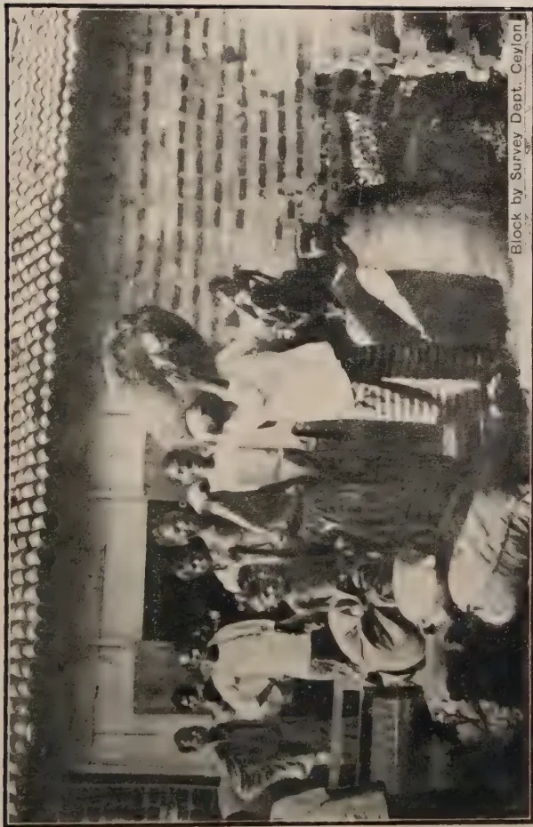
A black and white photograph showing a group of small growers, mostly women, carrying large sacks of cotton to a purchase centre. They are standing in front of a building with a tiled roof. The image is oriented horizontally on the page.Block by Survey Dept. Ceylon
SMALL GROWERS BRINGING IN COTTON TO THE PURCHASE CENTRE
AT HATAGALA.
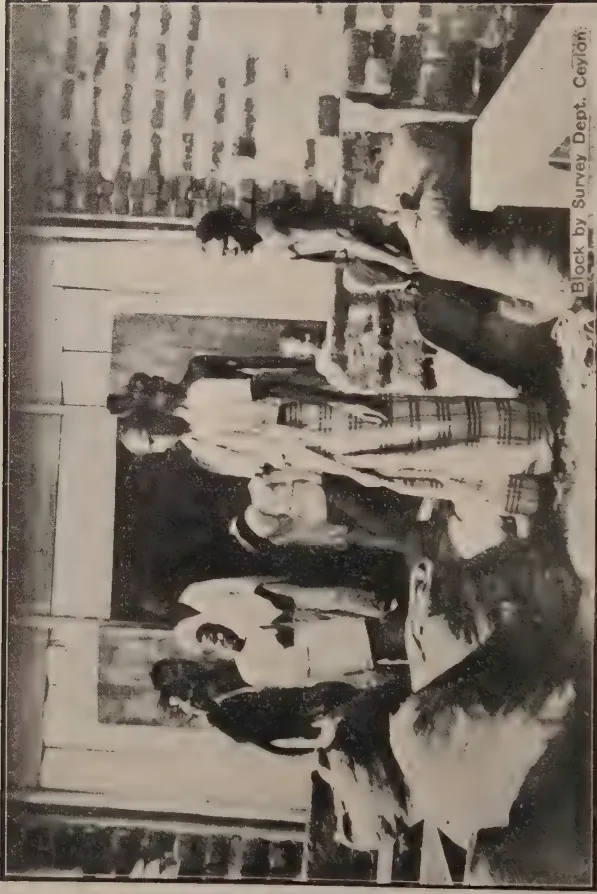
Block by Survey Dept. Ceylon.
BAGS OF SMALL GROWERS' COTTON AWAITING EXAMINATION,
Weighing and Purchase.
The amounts brought in from each Police Officer's Division were as follows :—
| Magam | Pattu | ||
|---|---|---|---|
| Kurundana..... | 1360 | lb. | Ihalakumbukwewa..... 3427 lb. |
| Padangama..... | 1022 | " | Gonnoruwa..... 165 " |
| Weliwewa..... | 2805 | " | Udamalale... 4520 " |
| Migahajandura..... | 370 | " | Tanalmalwila..... 500 " |
| Meegaswewa... .. | 112 | " | Weerawila..... 365 " |
East Giruwa Pattu
| Kendaketiya..... | 315 | lb. | Welipatanwila..... 11948 lb. | |
| Dabarella ..... | 11937 | " | Walasmulla ..... | 108 " |
| Mellaketigoda..... | 1240 | " | Ambalantota..... | 8308 " |
| Uswewa ..... | 4622 | " | Wetiya..... | 21 " |
| Talawa..... | 3815 | " | Siyambalakatuwa..... | 1395 " |
| Debokkawa..... | 2815 | " | Siyambalakote..... | 407 " |
| Kariyamaditta ..... | 2304 | " | Abeyasekaragama.. .. | 1498 " |
| Kudagoda..... | 3856 | " | Beragama.. .. | 181 " |
| Middeniya.. .. | 5878 | " | Hatagala..... | 4716 " |
| Sapugahayaya..... | 2045 | " | Etbatuwa..... | 292 " |
| Okandeyaya ..... | 2065 | " | Angunakolapellessa.... | 186 " |
| Labuhengoda..... | 554 | " | Pallegama ..... | 693 " |
| Kudagalara..... | 1702 | " | Kiula..... | 1794 " |
| W. G. Galpotaya... | 1292 | " | Bataata..... | 1809 " |
| Hellala..... | 2147 | " | Galmulla..... | 183 " |
| Murungagasyaya... | 4212 | " | Minietiliya ..... | 37 " |
| Welipitiya..... | 1962 | " | Mulana..... | 2621 " |
| Dikwewa..... | 1097 | " | Gommoruwa ..... | 1847 " |
| Beminiyanwila..... | 1174 | " | Kalametiya..... | 25 " |
| Tawaluwila..... | 3367 | " | Alutwewa..... | 253 " |
| Lunama..... | 3256 | " |
The first crop resulted in a total of
| 1003 | cwts | 1 | qr | 0 | lb. | of | 1st | grade | cotton |
| 16 | " | 1 | qr | 0 | " | of | 2nd | " | " |
| 4 | " | 0 | qr | 0 | " | of | 3rd | " | " |
The value being Rs. 25,477.50
The collection was made from the 25th March to the 7th April,—two days being spent at each centre—the cash being paid direct to the cultivator. The photographs show the cultivators bringing in the cotton at Hatagala centre.
The yield per acre varied enormously, from Abeysekeragama 6 cwt per acre were received and from some other district less than cwt was received
The cotton was grown on new clearings and it was resolved at a recent meeting of the Food Production Committee at Hambantota to recommend the establishment of two further small Experimental Plots to demonstrate that by proper rotation and cultivation the same land can be kept in continuous cultivation. These plots have since been sanctioned and one will be at Welipatinwila, and the other at Talawa. It is hoped that they will demonstrate that the cultivator can adapt himself to growing crops in rotation,
112[AUGUST, 1925.A. DESPEISSIS, M.R.A.C.,
Acting Superintendent of Agriculture, Fiji.
Pine-apples are found all over Fiji either wild along pathways in the scrub, or cultivated with more or less attention in native towns and gardens. They grow luxuriantly, both in the dry or the wet zone, where the rainfall ranges from 60 to 140 inches. Successful cultivation on commercial lines, however, requires attention to certain points briefly referred to in the following notes.
Experience has shown that a mean annual temperature of 75°F. in the cool months to 85°F. in the warmer months, with a narrow range between day and night temperatures and with an average monthly rainfall ranging from 2 to 20 inches, favour best the continuous growth of the plant. It can indeed endure heavier rain provided the ground is never water-logged. These are a shade above normal conditions in Fiji.
Good drainage is essential to healthy root growth and for that reason sloping land offers advantages not always found on flat land. Very fine pine-apples grow even on steep slopes, but gently undulating land easy to cultivate cheapens cost of production and is therefore preferable. Hawaiian experience has demonstrated that under the conditions obtaining there, an altitude of 500 to 800 feet favours disease-resistance as compared with pine-apples grown at low altitudes.
To guard against land scour during heavy tropical rains, storm-water drains running as far as possible across the declivity of the land should be provided to carry away the rush of surface water. In fact, in a climate like that of Fiji thorough drainage is an important preliminary work to the layout of a pine-apple plantation.
As the plant is intolerant of wet, retentive clay, a friable black or brown loam is the best, affording easy penetration of air into the soil round the roots and at the same time capable of absorbing and retaining moisture. Other soils, though, such as the grey or the red soils, of which there are several types, grow good pine-apples.
Certain soils have been found unsuitable, such as the black manganese soil of Hawaii or the lime-stone soils of Porto Rico, which cause iron starvation, characterised by a yellowing of the leaves and the development of undersized and acid fruit. A counteracting treatment consisting in spraying every few months a weak solution of sulphate of iron over the leaves is doing some good, but under Fijian conditions such a treatment is unnecessary for the reason that the trouble is non-existent.
AUGUST, 1925.]113Where the desirable physical conditions are absent they can often be created by deep cultivation, by the addition of coral sand or the ploughing in of a cover crop of Mauritius beans or of Cow peas a few months before planting.
The use of artificial fertilisers, which is a sine qua non of heavy cropping in other lands, is not practised yet on the virgin lands of Fiji, where, from all appearance, the weight of the fruit is often in excess of that considered the most economical for the requirements of the cannery.
Where manuring is not yet required, the benefit of cultivation is not to be denied. The native method of preparing the land answers in small parcels of picked land, but it does not lend itself to extensive cultivation. In the hand of the native the doko, which is the name of the stout pointed stick he uses, does good work. It is driven some 9 inches into the soil, in a slanting way, and while the top end is pressed down the pointed part in the ground heaves it up and leaves it in a loose and friable condition. Where a bigger area has to be stirred up, the operation is repeated from different angles around the same spot. Finally the doko is driven straight into the centre of the loosened ground and with a rotary motion it leaves a circular hole of the depth and the size required, into which the seed or the plant is placed and then the ground is pressed and made firm around.
By this method, stumping of the bush land is not essential and ground too steep for ploughing can be cultivated. The subsequent work of weeding, however, is made more costly and, all conditions being equal, the advantage remains with the cultivated land when the crop comes to be harvested.
Where the land can be cleared with the fire stick, such as the rolling downs under tall reed grass of the dry zone or of the intermediate country between this and the forest land of the wet zone, very little stumping remains to be done. When cleared, the land can be ploughed and then harrowed and cross-harrowed. After resting four or five weeks most of the roots and vegetable matter have more or less rotted, the same operation is renewed and the land is left in a loose and friable condition for laying out the lines for planting. Land thus prepared will be less costly to keep clear of weeds and will hold moisture even during lengthy periods of dry weather.
The Smooth Leaf Cayenne is the kind canners in Hawaii have founded their great pine-apple canning industry on and it is the kind therefore required for the proposed canneries in Fiji. This kind is also locally called, though incorrectly, the "Queen Pine" and sometimes the "Giant Kew."
The leaves are long, broad and smooth or with very few spines towards the tip, they are dark green in colour; the flowers are purple; fruit large to very large, weighing from 3 to 12 lb., pyramidal or cylindrical, dark orange yellow when ripe, flesh pale yellow; rich, well flavoured, pips large and flat. Does not sucker so freely as other varieties. The main crop ripens in the warmer months: October-February, with another shorter season in the cooler months: July-August. It is largely grown in the Azores for supplying the English market during the winter and early spring months.
114[AUGUST, 1925.The kind of pine-apple most popular in Fiji for eating is at the present time the Ripley Queen. Unlike the Smooth Leaf Cayenne, it has spiny leaves, green with purplish longitudinal streaks running up the centre and becoming less distinct as the plants get older. This variety is smaller than the Smooth Leaf Cayenne, the flesh is of a light canary colour, juicy, sweet, and highly flavoured.
The pine-apple is seldom a seed carrier and this method of propagation is only used when new varieties are desired for testing "wilt"-resistant varieties. A pine-apple seedling takes several years to grow and mature its fruit, hence the quicker method is usually followed of propagation by means of suckers, gill sprouts, slips, and crowns.
Like the banana, the pineapple bears only once, the subsequent crops being carried by "suckers" which grow at the base of the mother plant, take root and bear fruit in the proper season. When clearing up the plantation after the fruiting season, the old plants are removed and if the suckers are too numerous they are thinned down to two. Some prefer to plant gill sprouts to suckers for the reason that suckers often carry fruit already in embryo when removed from the ground; this appearing before the sucker is properly established, often fails to come up to standard. This objection only applies to the first crop and not to the second crop from suckers grown in situ.
The "gill sprouts" are buds which shoot out from the stalk at the base of the leaves. Two, three, or more may grow on the one plant; they are pulled off if they are likely to interfere with the size of the fruit.
The "slips" are produced from buds on the fruit stalk, at the base of the fruit. They are smaller than the suckers and the gill sprouts, but are more abundant. If it is intended to use them for planting, all but two are rubbed off.
The "crown" is the cluster of short leaves on the top of the fruit; when required, they are collected at the cannery and may be used after the usual period of sun curing to dry up the flesh which would otherwise ferment in the ground and interfere with growth.
The "stumps" are occasionally used for planting and produce vigorous growth. It is the only portion of the pine-apple plant in which starch is found stored up. They may be planted in holes like sugar-cane sets. The time between planting and the ripening of the fruit varies with the strength of the plant. Strong suckers bear within twelve months. If transplanted like gill sprouts, the fruit may be cut in about fifteen to eighteen months. Slips generally take eighteen months, and crowns even longer.
Some preliminary preparation is required for healthy growth. Whether suckers, gill sprouts, slips or crowns are used, it is usual to expose the butt end to the sun for a few days to prevent bleeding and base rotting when they are put in the ground.
If mealy bugs are present at the base of the leaves it would be advisable to dip the butts into kerosene emulsion for a few minutes.
When plants are removed to the site of new plantation some distance away they are tied up into bundles of 25 or 30, all the tops pointing one way. They thus stand less risk of heating and fermenting than if packed in bags or in boxes.
AUGUST, 1925.]115At the time of drying the butts of the suckers in the sun and before planting, the small leaf scales at the base are pulled off to guard against what is known as ranglefoot. This enables the rootlets to strike out freely, as they sometimes twist round the base of the young plant and girdle it and choke its growth, when it becomes necessary to pull out the plant from the earth, cut the twisted roots and replant again.
Planting can be done at any time under island conditions, provided the ground is moist enough, but summer and autumn planting during the rainy season is best, as the plant growth starts then and is not checked during the winter.
The number of plants required for an acre usually ranges from 3,000 to 7,000 according to kinds and the lay-out of the ground. The experience gained is in favour of close planting, but provision must be made for the convenient working of the plantation: this consists mainly in maintaining it clean and in removing the crop which may be very heavy.
In Hawaii and in Queensland the double or the triple row system, with an interval of 6 feet between the rows, is preferred. The plants, about 5,000 to the acre, are set in alternate lines at intervals of 18 to 24 inches in the rows.
In Singapore the common plan is single rows five feet apart, with plants feet in the rows and a 6 feet path at every 100 feet. About 3,000 suckers are required to plant up an acre.
In Florida close planting in beds 12 to 15 feet wide with a pathway around is the practice generally followed. The distances between the plants being 20 by 20 inches for the smaller varieties, up to 36 by 36 inches for the largest kinds. The plants are not always set out in squares; Smooth Cayenne, for instance, is often planted 20 by 30 inches apart.
This close planting fills the ground quicker, smothering the weeds, the plants support each other better and there is less sun scalding. On the other hand, a greater number of plants is required for a given area or land and horse cultivation becomes out of the question. The gathering of the fruit is more difficult, particularly the spiny leaf kinds, and the plantation requires systematic thinning out or else it becomes impenetrable.
From the time of planting, clean weeding and the maintenance of a loose friable surface will help the plants along. When the spacing is wide enough to permit of horse cultivation, light scarifiers of the Planet Junior type will effect that work, with a little hand hoeing and hand weeding where the tools cannot be safely used. To obviate this weeding, locally made paper strips are used with advantage as a mulch in Hawaii, and tend in suppressing weeds, conserving moisture and improving the size and quality of fruit suitable for canning. When ploughing is found necessary it should be to and not from the pines. In wet places more particularly, this will leave a shallow furrow which acting as a drain will save the roots of the plants rotting in water-logged land.
Weedicides have lately been used with advantage in Hawaii, both in cane fields or on pine-apple plantations, but in inexperienced hands this may prove harmful.
116[AUGUST, 1925.As soon as the pine-apples close together, the weeds are smothered out and the cultivation of the open spaces between the lines is all that need be done.
It is at this time that all superfluous gill sprouts and slips are removed, also old stumps which have already borne fruit. Only suckers growing out of the ground or ratoan suckers are left, not more than two to a plant, overcrowded beds produce mostly spindly suckers and low grade fruit.
At the same time any barren plants or suckers or crippled pines are pulled out and destroyed. A dark line showing on the underside of the leaf and running lengthwise generally indicates such undesirable suckers.
"Spiking" or pines with narrow leaves growing straight up, is an indication of weakened vitality and may be caused by insufficient cultivation, want of drainage or excessive acidity in the soil. Once the cause is corrected the effect disappears.
The main crop in Fiji ripens in the summer from November to January, with a slight variation in the range of the season, according to locality and the time of planting.
The Smooth Cayenne besides has a short season in the winter: July-August. The summer crop is the main crop and the more regular, producing a better flavoured fruit.
For shipping, the fruit is picked when fully developed and partly coloured, but before it is fully ripe. For local sale it is allowed to remain on the plant a little longer, until quite ripe, but it must be cut before it is dead ripe and before the flesh is likely to lose its firm texture during the process of canning and develop a winey flavour.
Unlike the banana, the apple or the pear, the sugar content of the pineapple does not increase after removal from the parent plant. The source of that sugar emanates from the stored up starch in the stump portion of the plant, so that when that source is cut off the supply ceases.
A pineapple cut on the green side, for shipment, continues to colour up but its sugar remains at 5 or 6 per cent, as it was at the time of cutting. By the time it is cut and ripe enough for eating straight or for the cannery, the sugar content has doubled and with the rise in sugar the flavour also increases.
This fact was illustrated last year when this Department shipped in cold storage to the Dominion Canners Ltd., Vancouver, a trial consignment of pineapples. They all carried well, but some cut on the green side and apparently ripe had not improved in sweetness and could not be compared for flavour with the rest cut at a more advanced stage of ripeness.
With the more general application of cold storage to the shipment of fruit, it will be possible to pick pineapples more fully ripe and supply distant markets with a sweeter fruit like that gathered for eating in the country of production.
Pineapples either for shipping or for canning should be cut from the plant an inch or two below the fruit and when ready for casing, a stump
AUGUST, 1925.]117an inch long should be left on the stalk or else the core rots after a few days and the fruit is wasted.
For canning, fruit fully ripe and of the proper size, to 7 lb. cylindrical rather than conical, are placed in strong crates or lug boxes where they carry without bruising to the cannery where they are put through the process within 24 to 48 hours from the time of cutting.
For the fresh fruit trade, the number of pineapples is indicated on the case. The consignment shipped to Canada, mentioned above was packed, in the flat Azores case, 40 inches by 21 inches by 8 inches outside measurement with a centre board and open cleats for ventilation. The pineapples were packed in single layers twelve to sixteen in the case, the butt end pointing outwards; the temperature in the cool chamber was maintained at to F.
In Hawaii octagonal shaped crates are used, holding likewise about a dozen fruit each, the shape of the package ensuring ventilation all around.
The Smooth Leaf Cayenne is tender and difficult to pack. In Cuba, Florida, and Hawaii a large export trade has been worked up for the fancy trade, the fruit, weighing 8 to 10 pounds, being shipped in heavy paper cartons packed in crates and distributed to various parts of the United States.
Soil, climate, cultivation, and freedom from pests and diseases influence the yield. One fruit per plant will be produced for the first crop. Odd plants are barren but they are few and they can be weeded out. Under ordinary conditions therefore 4,500 to 5,500 fruit may be produced per acre planted at distance shown in the double and the single row systems. About 3,000 if planted as explained in Singapore and 6,000 or more if planted in beds, Florida fashion; after the first year they should produce an average of about two fruits to each original plant. The pineapples may not all be marketable or many may be spoilt by sunscald, through the depredation of rats or for some reason or other. In Singapore 6 to 12 tons per acre are gathered, in Hawaii 8 to 20 short tons and more. In Florida quite as much. The weight per acre has not been ascertained in Fiji, but if 4,000 to 8,000 pines averaging 4 lb. each are picked, a crop of 7 to 14 long tons should be obtained without manuring as practised on old cultivated land.
Under the natural conditions obtaining in Fiji, admittedly favourable as they are, the length of time a pineapple crop takes before showing signs of declining has yet to be determined; without the stimulus of artificials, it is highly probable that three or four good crops may be expected, whereas with the right kind of fertilizers and with care and attention that time may be much extended before new fields freshly opened out replace the old ones. With home-grown suckers available for the labour of picking, the cost of a new plantation amounts to only half that of the initial plantation when suckers have to be bought. A renewal every few years or so is generally advisable to ensure a higher proportion of first class fruit.—Agricultural Circular, Fiji, Vol. V, No. 2.
118[AUGUST, 1925.Equip yourself with a
TRADE MARK 'TABLOID' BRAND
MEDICAL OUTFIT
Specially designed to provide for any emergency when far from medical aid. Each case is strongly
made and is fitted with a comprehensive equipment of 'TABLOID' Brand products, dressings, etc., always ready for use.
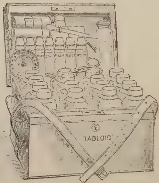
Write for Booklets: "Modern Medical Equipments" and "Good Health," which describe them in detail. Free on request.
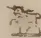
BURROUGHS WELLCOME & CO.
SNOW HILL BUILDINGS, LONDON
AND HORNBY ROAD, BOMBAY
art 4194
All Rights Reserved
H. W. JACK, B. Sc., B. A.
Economic Botanist, Department of Agriculture, S. S. & F. M. S.
The methods employed by Malays in the cultivation of paddy are frequently criticised as wasteful, laborious and antiquated, but the more such methods are studied the more will the student realise that they have been evolved from long years of practical experience and that many practices in vogue are not so "ridiculous" as may appear on first consideration.
The critic is generally unacquainted with the real conditions under which paddy cultivation can be carried on successfully and frequently forgets the important facts that the industry is entirely conducted by small holders and that they have little or no capital.
AUGUST, 1925.]119Rarely can good paddy land be found which is uniform in respect of soil texture and composition and free from soft pockets which may result from the removal of jungle stumps or may mark previous slimy wallowing pits of the paddy buffalo or denote abandoned wells.
Further; the nature of a paddy area frequently necessitates terracing to such an extent that the unit area is reduced to a very small block which has to be bounded by a "batas" or bund in order to hold up the water supply, so essential for the production of profitable crops. Moreover, cultivation is always carried on under wet weather conditions. All these factors bear a highly significant relation to methods of paddy cultivation which, with long practice, have become customary, and the poverty of the cultivators certainly militates against the operation of some of the more modern forms of cultivation, such as tractor ploughing at any rate until native agriculture becomes more organised.
The practices which are most subject to criticism are those of ploughing the land and harvesting the crop, and this note is intended to portray briefly the relative merits of buffalo ploughing in contrast to ploughing by tractor in the light of existing conditions of rice growing.
The tillage of land for the cultivation of paddy is entirely performed by so-called 'antiquated' methods which have been described in the Malayan Agricultural Journal, Vol. XI, No. 5, 1923.
The native plough is a much maligned implement, and is wrongly held responsible by critics for unsatisfactory paddy crops. True, the soil is often far too scantily tilled but this is no fault of the plough—the cultivators may not incline to industrious labour or there may be shortage of buffalos or each man may be attempting more than he can cope with thoroughly or the rains which soften the soil may be late.
The native plough is simple in construction, light, and of easy draught and shaped for shallow work which is all that is required for the rice plant. Tractors are cumbrous in the paddy fields, complicated in construction, costly to purchase, expensive to work on small areas, require constant supervision and are apt to dig themselves in whenever they strike a soft pocket of soil; still they have useful points in their favour in being able to furrow and turn hard soil and to work more rapidly than the buffalo.
On the opening of a new paddy experiment station at Pulau Gadong in Malacca in 1922 the land selected was hard and had been under lalang for at least 10 years and thus offered a good test for tractor ploughing.
In 1922 a block of 5 acres was ploughed and harrowed with a Fordson tractor, thanks to Messrs. Wearne Bros., Ltd., who kindly offered to do the ploughing, free of cost, as a demonstration. While the 'Fordson' ploughed the land well—in fact too well, the furrow being rather too deep for the first season's growth of paddy on previously untilled land—the work proved much more costly than was anticipated, though the condition of the land was somewhat adverse and the driver was unaccustomed to ploughing. The land was ploughed at the rate of 2.9 acres per day of eight hours at the calculated cost of $11.50 per acre. The slow working was mainly due to the inexperience of the driver in the handling of the machine, particularly the plough, coupled with the rough nature of the soil which was packed with lalang roots and the smallness of the land, divisions necessitating frequent turnings which cost fuel and wasted time.
According to Mr. Fairweather (the Field Officer who conducted all the trials) subsequent ploughings could probably have been done at a cost of $8/- to $9/- per acre and at an increased rate, especially if the driver in the meantime gained more experience in handling the plough, and considering that occasional obstructions had been removed during the first ploughing.
120[AUGUST, 1925.The calculated cost of harrowing and cross-harrowing, that is, two harrowings, was $2.30 per acre, so that if $8.50 be regarded as the cost of ploughing previous tilled land, the cost of preparing the land for planting should be less than $11.00 per acre, to which must be added the expense of making batas and the establishment of nurseries.
Some 7 acres of additional new land were ploughed in 1923 using a caterpillar type of tractor—the Cletrac—kindly lent by the Agriculturist for the occasion. This tractor proved very troublesome at first but with a change of driver did very good work except when soft pockets were encountered when it dug itself in just as effectually as did the 'Fordson.'
Ploughing and harrowing costs with the 'Cletrac' were much the same as in the case of the 'Fordson,' though actual figures are not available. The 'Clectric' disc-harrowed land which had been ploughed the previous season at the rate of an acre per hour.
Of course, these tractor working costs do not include cost of machinery or its transport or interest on capital or depreciation or supervision, all items which would very appreciably increase the working cost particularly on a small area.
In contrast, buffalo ploughing costs in Malacca have been worked out by Mr. Fairweather at $2.50 per acre including depreciation of buffalo and implements (though contractors always want $8/- to $10/- per acre), and harrowing and rolling each at about the same rate as ploughing. While costs of Malay labour and assessment of depreciation on buffalo and implements are difficult to calculate, the work of ploughing takes a Malay 5.6 days, harrowing 3 days, and rolling 1-2 days, or in all 9-11 days labour per acre.
Malay contract rates for ploughing, harrowing and rolling take no cognisance of the arduousness of the buffalo's task but are merely based on the number of days' work each operation is likely to take and hence their complete contract rates for preparing the land vary between $16/- and $23/- per acre, whereas all these operations have been accomplished, using Departmental buffalos and paying wages at the rate of 50 cents per day of 5 hours, at a cost of $5/- (exclusive of cost of upkeep of buffalos). From the Malay standpoint the depreciation and upkeep expenses of keeping a buffalo are immaterial, as is depreciation of implements which they usually fashion themselves and which often last a very long time.
Thus the preparation of land for paddy planting, using buffalo power costs about $5/- per acre if the cultivator owns his own buffalo, and if he has to rent a buffalo (the rent may amount to $3/- or $4/-) about $9/- per acre, whereas using tractor power the same work costs $11/- per acre without allowing for any but actual running costs.
Hence the economy and suitability of using buffalo in preference to mechanical power, under existing conditions of paddy cultivation, is very apparent.
Tractors may have a future in paddy cultivation on large areas where the soils are fairly hard and where irrigation is controlled, especially for harvesting purposes, but they are essentially implements for use on large areas and are only available to capitalists, and as such their adoption is very remote even if co-operation should succeed in overcoming the existing poverty of the average paddy planter.
Much of the information on which these brief notes are based is obtained from the files of the Chief Field Officer, to whom thanks are tendered.—The Malayan Agricultural Journal, Vol. XIII, No. 5.
AUGUST, 1925.]121Minutes of the twenty-fifth meeting of the Estates Products Committee of the Board of Agriculture held at the School of Tropical Agriculture, Peradeniya, at 2-20 p.m. on Thursday, July 9th, 1925.
Present:—His Excellency the Officer Administering the Government (in the chair), The Director of Agriculture, The Government Entomologist, The Government Mycologist, The Government Agricultural Chemist, The Divisional Agricultural Officer Central Division, The Hon. Lieut.-Col. T. Y. Wright, Gate Mudaliyar A. E. Rajapakse, Messrs. J. E. P. Rajapakse, Graham Pandittasekera, Wace de Niese, C. E. A. Dias, T. A. de Mel, R. F. Battams, J. Fergusson, G. W. Hunter-Blair, H. D. Garrick, J. W. Oldfield, N. G. Campbell, E. W. Keith, E. C. Villiers, S. P. Blackmore, C. B. Loudoun-Shand, R. G. Coombe, Geo. Brown, M. H. Reeves, E. C. Cave-Brown and T. H. Holland (Secretary).
As visitors:—Messrs. Farley Elford, A. W. L. Turner, R. P. Gaddum, J. Greig, T. Reid, F. P. Jepson, V. Canegaretnam, J. P. Blackmore, M. Park and H. W. R. Bertrand.
Letters and telegrams regretting inability to attend were received from the Hon. the Controller of Revenue, the Hon. the Acting Colonial Secretary, the Hon. Sir James Peiris, Sir Solomon Dias Bandaranaike, Messrs. H. Wilkinson, D. S. Cameron, A. H. Reid, N. D. S. Silva, H. B. Daniell, D. F. C. Dyson and H. V. Hill.
The Chairman proposed the confirmation of the minutes of the last meeting.
Mr. R. G. Coombe said that at that meeting he had proposed a resolution expressing appreciation of the work done by Mr. F. P. Jepson on Shot-hole Borer. He had since learnt that Dr. C. H. Gadd was jointly responsible for the interpretation of the results of the Shot-hole Borer experiments and he wished Dr. Gadd's name to be included in the expression of appreciation. The minutes were amended accordingly and were then confirmed.
The Director of Agriculture reviewed the report. He mentioned that a plot of Vigna oligosperma had previously died out from a fungus disease. The disease in question had again appeared on this plant.
Dr. Gadd said that the fungus was essentially a soil fungus and was hard to get rid of; it was liable to attack other leguminous crops grown on the same ground.
Mr. T. H. Holland reviewed the report on these experiments.
The Director of Agriculture said that it was apparent that no further information was likely to be elicited from these experiments. He outlined
122[AUGUST, 1925.his proposals for dividing up plots 144, 150 and 155 into small plots of 40 bushes each and treating these plots with different manurial mixtures, each treatment to be repeated 5 times. He proposed that the rest of the tea included in the old experiment should be planted up with Indigofera endecaphylla in order to study the affect of such a leguminous cover crop upon tea yields.
The Chairman invited discussion of the report and the proposals.
Mr. T. A. de Mel agreed that it was necessary to overhaul the experiment. He suggested that in addition to control plots a balanced mixture should be included.
The Director of Agriculture pointed out that his proposals for plot 155 included a balanced general mixture.
Lieut.-Col. T. Y. Wright asked if it was any use experimenting on plots of 40 bushes.
The Director of Agriculture replied that it was now generally accepted that small plots were better than large ones so long as the treatments were repeated a sufficient number of times.
Mr. Holland reviewed the report on the two manurial experiments in progress.
Mr. C. E. A. Dias suggested with regard to the other experiment that since it was shown that the yield was not being influenced by manuring there was no use in continuing the experiment on these plots. An Experiment Station was required in one of the large rubber growing districts such as Kalutara.
Mr. E. C. Villiers wished to know if there were any figures with regard to the effect of manuring on disease.
The Director of Agriculture in reply referred to experiments that had been carried out on Gallawatte Estate in manuring to combat leaf-fall. Though figures could not be quoted those who were familiar with the estate were satisfied that an improvement had been effected by manuring. He agreed with Mr. Dias on the need for a Rubber Experiment Station. At present it certainly seemed that on good soils rubber yields were not increased by manuring.
The Director of Agriculture reviewed a report on experiments in progress at Henaratgoda on comparative yields obtained by tapping on a half, third, and quarter circumference. He further stated:—
(1) the Malayan results were as follows:—
. The yields from the circumference were from V-cuts.
(2) The Sumatra results were as follows:
. Here again the yields from the circumference were from V-cuts.
(3) The average Java results from single cuts comparable to the Ceylon figures now presented were as follows:
.
AUGUST, 1925.]123Agenda Item 5 -Proposal for Soil Erosion Experiments at Peradeniya Experiment Station.
Mr. Holland submitted the final proposals for these experiments.
Mr. R. G. Coombe remarked on the absence of a plot with Grevilleas and said that he had understood at the last meeting that Grevilleas were to have been included.
The Director of Agriculture said that owing to very limited number of plots it had been found impossible to include a Grevillea plot.
His Excellency the Officer Administering the Government said that there was no matter which gave him more anxiety for the future of the Colony than the question of soil denudation. After dwelling on the serious nature of the evil in Ceylon he described the conditions in China where, in certain districts, in spite of sudden and very heavy precipitations of rain the soil was admirably preserved for rice growing by a system of terracing. Records showed that such fields had been in existence for four and five hundred years. He attached the greatest importance to soil erosion experiments and hoped to see experiments conducted on a very much larger scale.
Lieut.-Col. Wright asked if a sub-committee had not been appointed to enquire into this problem.
The Director of Agriculture replied that the report of this Committee had been forwarded to Government and had been considered by the Executive Council. One of the recommendations made by the Committee was that further experiments should be conducted by the Department of Agriculture to ascertain the amount of soil erosion that was taking place. The experiments now proposed were the results of the findings of that sub-committee. He hoped that when the Tea Research Scheme started its operations more land would be available for experiments on this problem. The Legislative proposals made by the sub-committee had all been considered.—The Surveyor-General thought that the suggested slope of 60% was too great and the question of dealing with stream reservations was under the consideration of the Forest Department.
In response to a question by Lieut.-Col. Wright the Director of Agriculture said that the sub committee had presented its report about a year ago.
The Chairman said that there was considerable disagreement over the report of the sub-committee. The proposals however were mainly concerned with the future sale of Crown land. He was more concerned about the existing tea estates. It would be disastrous if these estates had to go out of cultivation in time to come owing to soil denudation. In conclusion he promised that any suggestions made for obviating the danger would receive the most careful and sympathetic attention of Government.
Agenda Item 6.—Tea Termites.
Mr. R. G. Coombe in introducing this subject alluded to the good work that had been accomplished in the recent investigations on Shot-hole Borer. He considered that termites were a more serious pest than Shot-hole Borer and the two pests combined formed a grave menace. He asked the Director of Agriculture if one or more officers could not be allotted to devote their whole time to this question.
.124[AUGUST, 1925.Dr. Hutson then gave a resumé of the work done in relation to this pest and the information already published on the subject.
The Director of Agriculture said that he had discussed this question with the Entomological division and the need for more field work was realised.
He proposed that Mr. Jepson, as soon as he had finished writing up the results of his work on Shot-hole Borer, should concentrate his attention on Tea Termites.
Mr. Coombe thanked the Director and said that the planting community would be very pleased to hear that Mr. Jepson was to devote himself to this work.
Mr. Harbord reviewed the report on these experiments. He said that the calculation of the cost of cultivation was complicated by the fact that there were 8 plots of different ages. The cost could be reduced in practical planting. The cost per ton was calculated on a four-year cropping basis at half a ton of fibre per acre per annum. The cost of extraction was rather high. The recognised out-turn for the type of extractor in use was tons against an out-turn at Anuradhapura of rather more than 2 tons.
In the absence of a baling press a hand straw-trusser had been used with fair success.
The extraction of 2.6% was the average for the 1924 cropping season. In 1925, it had averaged for 2.8% up to date.
Fibre was lost both in the waste during extraction and in combing or brushing. This waste was recoverable as tow and amounted to a little under 4% of the fibre. The length of the cropping period was not known but was estimated at four or possibly five years. The average yield was estimated at ton per acre per annum.
The Director of Agriculture said that the whole object of the experiments was to see if a peasant industry with central factories could be established in the Dry Zone. The Dry Zone formed one of the most difficult problems of the Department of Agriculture. Sisal was so far the only crop which had shown any promise of success on unirrigable land. The costs now published were rather high. The object was to see if Government would be justified in establishing central factories; he believed that with perseverance these could be made a success.
Mr. Garrick enquired whether the villagers round Anuradhapura had taken any interest in the crop. It was the intention at Maha-Illuppalama to get the local villagers to grow sisal and sell their leaves to the estate.
Mr. Wace de Niese, referring to the suggestion that early polling was due to planting with suckers, asked what other planting material could be used.
The Director of Agriculture replied that it was believed that if suckers from a polling plant were used for planting the plants obtained were liable to poll earlier. It was best to plant from bulbs that had been grown for one year in nurseries.
AUGUST, 1925.]125Mr. Garrick said that he believed that earlier polling occurred on better soil. Polling at Maha-Iluppalama was taking place in four to five years. Early polling however need not mean a loss as the crop was obtained earlier.
The Director of Agriculture confirmed this view.
Lieut.-Col. Wright enquired if replanting was necessary.
The Director of Agriculture replied that it was advisable; if all suckers were allowed to grow an impenetrable jungle would result.
The Chairman said that the experiment was of great interest in that it indicated a road by which the peasant in the North-Central Province might pass from a chronic state of poverty and malnutrition to prosperity. Government did not wish to move in the matter until a definite assurance was forthcoming that sisal could be made a paying proposition for the villager. For this reason it was necessary that the figures now published should be critically examined in detail. He hoped that all who had special knowledge of the crop would put it at the disposal of the Director of Agriculture.
Mr. George Brown spoke of the difficulties in bringing supplies in old tea into bearing and asked if from the scientific point of view any helpful advice could be given.
Mr. Holland gave details of the different methods of planting that had been employed from time to time on the Experiment Station; the most successful had been that of planting young plants one foot to one and a half foot high raised with a transplanting tool. He also enumerated the various measures that had been taken to assist young plants in their growth. No figures were however available as to the relative success or utility of these measures.
The Director of Agriculture said that difficulty was in all probability due to the competition from the roots of the established tea bushes. The only solution of the problem appeared to lie in the careful nursing of the young plants.
Gate Mudaliyar A. E. Rajapakse reviewed his report on these experiments.
The first experiment had been in progress since 1914 on old cinnamon soil in the Negombo district.
The best plot in the experiment was one manured with a general mixture and mulched, but a still better yield of 63 nuts per tree was obtained from another plot on the estate which was manured with a general mixture containing Nitrogen, Potash and Phosphoric acid in the proportion of 1, 2 and 3; from 1925 it was proposed to manure all the plots on this basis. In view of the alteration of the manuring, Mudaliyar Rajapakse promised a full report on the results of the experiment over 11 years.
The second experiment was started in 1917 to determine whether the fertility of coconut land could be maintained by returning all the products of the palms to the land except oil. The figures showed that an acre of coconut land produced about tons of organic matter per year. The yield of nuts in this case was adequately maintained.
126[AUGUST, 1925.Mr. Garrick and Lieut.-Col. Wright made enquiries as to the economic side of the practice of only removing oil from coconut land but exact information on this point was not available. The Director of Agriculture thanked Mudaliyar Rajapakse on behalf of the Committee for his report; he hoped that the experiments would be continued, even if in a modified form.
Agenda Item 10 Report on Coconut Trials at Alexandra Estate.
Jaela for 1924.
Mr. J. E. P. Rajapakse reviewed his report on these trials. He stated that the idea of the experiments had been suggested by the early success of a plot of Mudaliyar Rajapakse's land which received only frequent cultivation. When the Director of Agriculture visited the land in 1921 however it was decided that cultivation alone was not advisable and that manures should be applied.
The Director of Agriculture thanked Mr. Rajapakse for his report which clearly indicated that cultivation alone could not give lasting results but that manuring was needed in addition.
Mr. Oldfield said that he thought these reports on coconut experiments had been presented at a very opportune time. They clearly demonstrated the value of such experiments and the need for a Coconut Research Scheme.
Agenda Item 11—Mimosa invisa.
The Director of Agriculture had circulated a memorandum on this subject and now asked the opinion of the meeting as to whether the import of seed of this plant should be prohibited and whether the plant should be declared a weed under the Plant Pest Ordinance.
Lieut.-Col. Wright said that he had had very favourable reports of the plant from coconut estates in the Straits.
Mr. Oldfield said he had seen the plant once in young rubber and it had taken three years to eradicate it.
The Chairman enquired if the meeting was in favour of the measures proposed by the Director of Agriculture.
Mr. J. E. P. Rajapakse thought that as the plant was leguminous it might be of considerable use.
On the question being put to the meeting the majority was in favour of the adoption of the measures proposed by the Director of Agriculture.
At the conclusion of the Agenda His Excellency the Officer Administering the Government said that he had been very glad to have the opportunity of meeting the members. He was pleased to be present at the meeting when the reports on Coconut Experiments by Mudaliyar Rajapakse and Mr. J. E. P. Rajapakse have been presented. He believed there was complete unanimity as to the necessity for Tea and Rubber Research Schemes and he could not see why an equal unanimity should not exist as to the necessity for a Coconut Research Scheme. He hoped that all opposition to the scheme would soon melt away.
The Director of Agriculture proposed a vote of thanks to His Excellency for his presence and for presiding at the meeting.
The meeting then terminated.
T. H. HOLLAND,
Secretary,
Estates Products Committee.
W. MOLEGODE,
Agricultural Instructor.
With the object of further popularising the Sunday Market at Alawatugoda, which was started on 29th of July, 1923, to answer the needs of the village producer of Udagampaha Korale in Harispattu, a Show was repeated this year when 36 cash prizes varying from Rs. 7.50 to Rs. 1.50 were distributed among villagers who brought for sale things of outstanding merit on Sunday 28th June, 1925. A similar Show was held in April last year. This year's Show proved a greater success. At the Show in 1924 there were 60 villagers and estate coolies who brought things for sale. At this year's Show there were 136. In 1924, there were 174 lots of produce representing vegetables, fruits, curry-stuffs, village rice, coconut, arecanut, plantains and goats and village poultry. This year the number rose to 284 and many things were superior to those seen last year. Vegetables were good and there were many lots of chillies. Heen-miris predominated and sold at -/20 cts. a measure. Fruits were poorer than last year, but curry plantains were more numerous and better and fetched good prices. Arecanuts were good and sold well. The number of goats this year was 18 against 6 brought last year.
The produce from Home Gardens of the boys of Alawatugoda and Ankumbure Schools was a feature of the Show. The produce from the Alawatugoda School Garden were shown separately and attracted the attention of village gardeners.
The Plant Pest Inspectorate of the Department of Agriculture had on view an excellent and attractive collection of specimens of pests and two Sub-Inspectors under the direction of Mr. Jardine were busy explaining them to the villagers.
A sale of vegetable seeds and fruit plants was carried on during the Show.
The attendance included the Hon. the Government Agent, Kandy; the Assistant Government Agent, Kandy; the Divisional Agricultural Officer, Central; the Plant Pest Inspector; H. Nugawela Ratemahatmaya, W. A. Udugama Ratemahatmaya, G. F. Abeykoon, Kachcheri Mudaliyar, Matale, Messrs. R. A. Cameron, J. J. Smale, S. B. Yatawara, J. R. Nugawela, G. de Silva, B. Dunuwila, P. B. Ranavana, L. B. Harasgama, D. B. Harasgama, and about two hundred villagers and estate coolies. The presence of the Hon. Mr. W. L. Kindersley again this year was much appreciated by the villagers.
It is a matter for satisfaction that as a result of the establishment of the Sunday Market and the holding of two market shows, garden cultivation in the villages has advanced. It has also to be recorded with great satisfaction that Government has acquired a new site which is much more spacious for holding the market, and I trust the next show could be held on this site.
My thanks are due to Mr. Nugawela, Ratemahatmaya, for his continued interest in this matter.
128[AUGUST, 1925.By agreement between the International Institute of Agriculture and the Italian Government a Committee has been established for organizing a World's Forestry Congress to take place in Rome early in May 1926. The headquarters of this Committee are at the International Institute of Agriculture in Rome, and the Committee is composed as follows: President, Prof. Arrigo Serpieri, Director of the Royal Higher Institute of Agriculture and Forestry at Florence, Member of the Italian Government; Vice Presidents M. Anders Fjelstad, Delegate of Norway at the International Institute of Agriculture and Dr. Alessandro Stella, Director-General of Forests and State Lands at the Italian Ministry of National Economy; Secretary, Sig. Ariberto Merendi, Chief Inspector of Forests at the Ministry of National Economy; M. Deoclecio de Campos, Delegate of Brazil at the International Institute of Agriculture, Sig. Gian Francesco Guerrazzi, Delegate of Italian Somaliland at the Institute and prof. Asher Hobson, Delegate of the United States of America at the Institute.
The Congress will bring together experts in forestry and the timber and allied industries from all parts of the world, and it is hoped that truly valuable and profitable results will be reached through the exhaustive discussions, which are expected to take place on all those problems of Forestry which are of really international importance.
At the same time, in connection with the International Fair at Milan there will be held an important exhibition of forest products and the machinery used in their conversion, which will enable visitors to examine the different products of the wood manufacturing industries and the wood working machines made in the various countries, and should serve to increase the flow of international trade in this important branch of commercial activity.
Various excursions to the more typical forest lands in Italy, and possibly in other countries, will be arranged to follow the work of the Congress.
The Congress is already arousing the warmest interest as it is considered to be the most important event in connection with Forestry and the allied industries that has as yet taken place.
August, 1925.]
129
(FROM THE CEYLON CHAMBER OF COMMERCE WEEKLY PRICE CURRENT, DATED 13th JULY, 1925.)
| NAME OF PRODUCE | CURRENT PRICE | REMARKS | |||
|---|---|---|---|---|---|
| Rs. | cts. | at | Rs. | cts. | |
| ACAO—(At Buyer's Stores) | |||||
| Estate—Finest ... .. per cwt | 46 | 00 | 52 | 00 | |
| Do Medium ... .. do | 35 | 00 | " | 45 | 00 |
| Do Common (Black) ... .. do | 15 | 00 | " | 25 | 00 |
| CARDAMOMS— | |||||
| All round parcel well bleached ... .. per lb. | ... | ... | " | ... | ... |
| Do do medium ... .. do | ... | ... | " | ... | ... |
| Special assortment 0 & 1 only ... .. do | ... | ... | " | ... | ... |
| Seeds ... .. do | ... | ... | " | ... | ... |
| Green .. .. do | 3 | 25 | " | 3 | 65 |
| CINNAMON QUILLS—(At Buyer's Stores) | |||||
| Ordinary assortment (in bales of 100 lb. nett) ... .. per lb. | 0 | 82 | " | 0 | 86 |
| No. 1 ... .. do | 0 | 85 | " | 0 | 89 |
| No. 2 ... .. do | 0 | 83 | " | 0 | 87 |
| No. 3 ... .. do | 0 | 80 | " | 0 | 84 |
| No. 4 ... .. do | 0 | 76 | " | 0 | 80 |
| CINNAMON CHIPS—Maradana, (At Buyer's Stores) (in bags of 56 lb. nett) per candy of 560 lb. | |||||
| ... | 85 | 00 | " | 90 | 00 |
| CITRONELLA OIL—(ex-Seller's Stores without packages) ... .. per lb. | |||||
| ... | 1 | 25 | " | 1 | 35 |
| COCONUT—(Desiccated Granulated goods (Delivered at Wharf or Buyer's Stores) ... .. per lb. | |||||
| Assortment: Medium 50 per cent. Fine 50 per cent. ... .. per lb. | 0 | 19½ | " | 0 | 19½ |
| COCONUT OIL— | |||||
| White Oil f.o.b ... .. per ton | ... | ... | " | 550 | 00 |
| Ordinary Oil do ... .. do | 525 | 00 | " | 530 | 00 |
| COPRA— | |||||
| Calpentyn No. 1 quality per candy of 560 lb. ... .. | 75 | 00 | " | 82 | 00 |
| Estate .. .. | ... | ... | " | ... | ... |
| Ordinary quality (Maravila) .. .. | ... | ... | " | ... | ... |
| Cart Do do .. .. | ... | ... | " | ... | ... |
| COBRES—(At Buyer's Stores) | |||||
| Coconut Bristle No. 1 ... .. per cwt. | 7 | 00 | " | 8 | 00 |
| Do No. 2 ... .. do | ... | ... | " | ... | ... |
| Coconut Mattress No. 1 ... .. do | 2 | 20 | " | 2 | 50 |
| Do No. 2 ... .. do | ... | ... | " | ... | ... |
| Coir Yarn, Kogalla Nos. 4 to 9 ... .. do | 8 | 00 | " | 22 | 00 |
| Do Colombo Nos. 3 to 7 ... .. do | ... | ... | " | ... | ... |
| PLUMBAGO | |||||
| Ordinary Lumps ... .. per ton | 320 | 00 | at | 425 | 00 |
| Chips ... .. do | 250 | 00 | " | 350 | 00 |
| Dust ... .. do | 175 | 00 | " | 250 | 00 |
| Do Flying ... .. do | 100 | 00 | " | 175 | 00 |
| B. | |||||
| Ordinary Lumps ... .. per ton | 250 | 00 | at | 360 | 00 |
| Chips ... .. do | 200 | 00 | " | 290 | 00 |
| Dust ... .. do | 125 | 00 | " | 200 | 00 |
| Do Flying ... .. do | 75 | 00 | " | 125 | 00 |
| B. E. | |||||
| Ordinary Lumps ... .. per ton | 200 | 00 | at | 250 | 00 |
| Chips ... .. do | 175 | 00 | " | 225 | 00 |
| Dust ... .. do | 60 | 00 | " | 125 | 00 |
| Do Flying ... .. do | 60 | 00 | " | 90 | 00 |
130
[AUGUST, 1925.
ANIMAL DISEASE RETURN FOR THE MONTH ENDED 31st JULY, 1925.
| Province, &c. | Disease | No. of Cases up to date since Jan. 1st 1925 | Fresh Record Cases | Deaths | Bal- ance III | No. Shot |
|---|---|---|---|---|---|---|
| Western | Rinderpest | 75 | 25 | 24 | — | 26 |
| Foot-and-mouth disease | 1741 | 156 | 8 | 91 | — | |
| Colombo Municipality | Anthrax | — | — | — | — | — |
| Kinderpest | 1 | — | — | — | — | |
| Cattle Quarantine Station | Foot-and-mouth disease | 318 | 32 | — | — | — |
| Anthrax Rabies | 4 | 1 | — | — | — | |
| Central | Rinderpest | 45 | — | — | — | — |
| Foot-and-mouth disease | 127 | 3 | — | — | — | |
| Northern | Anthrax | — | — | — | — | — |
| Kinderpest | 294 | 12 | — | — | — | |
| Southern | Foot-and-mouth disease | 9 | — | 1 | 11 | — |
| Anthrax | 110 | 8 | 60 | — | 42 | |
| Eastern | Piroplasmosis | 269 | 269 | — | — | — |
| Hemorrhagic Septicæmia | 50 | 10 | 37 | — | 3 | |
| North-Western | Anthrax | — | — | — | — | — |
| Kinderpest | 14 | 14 | — | — | — | |
| North-Central | Foot-and-mouth disease | 555 | 78 | 555 | — | — |
| Anthrax | 573 | 118 | 192 | 11 | — | |
| Uva | Kinderpest | 460 | 460 | — | — | — |
| Foot-and-mouth disease | 1083 | 51 | 1032 | 51 | — | |
| Sabaragamuwa | Anthrax | 211 | 30 | 25 | 111 | 75 |
| Kinderpest | 697 | 117 | 658 | 9 | 28 | |
| Foot-and-mouth disease | 8 | 2 | — | 8 | — | |
| Hemorrhagic Septicæmia | — | — | — | — | — |
G. W. STURGESS,
Government Veterinary Surgeon.
Colombo, 18th August, 1925.
METEOROLOGICAL
JULY, 1925.
| Station | Temperature | Mean Humidity % | Mean amount of Cloud 10 = clear |
Mean Wind Direction during Month |
Daily Mean Velocity Miles |
Rainfall | Difference from Average Inches |
||
|---|---|---|---|---|---|---|---|---|---|
| Mean Daily Shade |
Dif- ference from Average |
Amount Inches |
No. of Rainy Days |
||||||
| Colombo | 81.2 | +0.2 | 81 | 8.3 | SW | 134 | 5.75 | 13 | —0.72 |
| Observatory | 82.2 | +0.6 | 77 | 4.9 | SW | 244 | 0.27 | 2 | —0.29 |
| Puttalam | 84.2 | +0.6 | 74 | 6.6 | SSW | 260 | 0 | 0 | —0.38 |
| Mannar | 83.2 | +0.2 | 78 | 7.0 | SW | 392 | 0.33 | 0 | —0.91 |
| Jaffna | 85.9 | +0.7 | 62 | 7.0 | SW | 257 | 0.78 | 2 | —1.70 |
| Trincomalee | 85.0 | +0.4 | 70 | 5.4 | Var. | 149 | 0.44 | 3 | —0.47 |
| Hambantota | 81.6 | 0 | 79 | 4.1 | SW | 361 | 3.37 | 4 | —1.34 |
| Galle | 80.3 | +0.4 | 80 | 5.6 | W | 257 | 5.74 | 13 | —2.80 |
| Ratnapura | 81.0 | +0.7 | 80 | 6.0 | — | — | 0.01 | 1 | —7.18 |
| Anu pura | 83.6 | +0.4 | 68 | 5.7 | — | — | 2.01 | 8 | —1.25 |
| Kurunegala | 81.0 | +0.4 | 74 | 7.6 | — | — | 2.21 | 12 | —5.34 |
| Kandy | 77.0 | +1.2 | 76 | 8.3 | — | — | 1.65 | 6 | —0.30 |
| Badulla | 74.8 | —0.4 | 72 | 5.8 | — | — | 0.39 | 4 | —1.66 |
| Diyatalawa | 70.6 | +0.6 | 63 | 6.6 | — | — | 1.54 | 14 | —5.44 |
| Hakgala | 63.6 | +2.4 | 75 | 6.6 | — | — | 3.13 | 16 | —9.01 |
| N. Elyia | 60.6 | +1.6 | 79 | 8.3 | — | — | — | — | — |
The rainfall of July, 1925, was consistently in deficit throughout the island. Out of over three hundred stations only half a dozen reached their average and these did so with but little margin. The deficits were greatest in the areas where the averages are highest, i.e., on the west side of the main hills, where they amounted to from 15 to 20 inches in the Ambegamuwa-Hatton districts.
The fact admits of more than mere statistical interest, in view of the suggestion first made in 1922 (Bulletin No. 4, para 33) that a series of well developed thunderstorms in April tended to be followed by a drier monsoon than usual. It cannot be claimed that the point is fully established yet, but it has certainly received strong support in 1925.
Kitulgala alone recorded a fall of over 5 inches in a day, and that was on the last day of the month!
The figures for amount of cloud were above rather than below average, but those for humidity and number of rainy days were both consistently in deficit. At Jaffna the mean wind velocity was well above normal, but the variations at other stations were on both sides of their respective averages.
A. J. BAMFORD,
Supdt. Observatory.